摘要
Abstract
许多地球系统模式在积雪覆盖地表反照率的量值及其季节循环方面存在显著偏差。
Many Earth system models contain substantial biases in the magnitude and seasonal cycle of the albedo of snow-covered surfaces.
多种结构性缺陷和参数缺陷已被认为是这些反照率偏差的潜在成因，涉及植被的分布与丰度、雪反照率以及对森林冠层截留积雪过程的表征。
Various structural and parametric deficiencies have been identified as potential causes of these albedo biases, related to vegetation distribution and abundance, snow albedo, and the representation of snow interception by forest canopies.
然而，由于难以将这些反照率偏差与其他复杂过程及反馈分离开来，人们对这些偏差如何直接影响模拟气候仍知之甚少。
There is, however, little understanding of how the albedo biases directly influence simulated climate because of difficulties in isolating them from other complex processes and feedbacks.
本研究利用美国国家大气研究中心社区地球系统模式（CESM）开展了一系列新型模拟，用根据观测或其他模式模拟指定的数值取代模式内部的地表反照率计算值。
In this study, we conduct a number of novel simulations using the National Center for Atmospheric Research Community Earth System Model (CESM), replacing the model’s internal surface albedo calculation with values prescribed from observations or from other model simulations.
结果表明，尽管地表反照率偏差在冬季最大，但春季的偏差对地表气候影响最大，因为春季入射太阳辐射强得多。
Results show that while biases in surface albedo are largest in winter, those during spring have the greatest impact on surface climate because incoming solar radiation is much stronger.
订正 CESM 中反照率季节循环的偏差，可在春季减小整个北方地区的气候态温度偏差，并部分订正北极海平面气压偏差；但由于误差补偿，总体气候偏差并非总能减小。
Correcting biases in the seasonal cycle of albedo in CESM reduces climatological temperature biases across the boreal region in spring and partially corrects Arctic sea level pressure biases, but due to compensating errors, overall climate biases are not always reduced.
此外，我们施加从其他具有较大正、负反照率偏差的气候模式中提取的反照率分布型，以说明由此可能产生的气候响应。
Additionally, we impose albedo patterns extracted from other climate models with large positive and negative albedo biases to illustrate the climate responses that can result.
指定的地表反照率会对地表辐射和陆地近地表温度产生显著影响，较少情况下也会对大气环流产生显著影响。
Prescribed surface albedo produces significant impacts on surface radiation, near-surface land temperatures, and, more rarely, atmospheric circulation.
这一点十分重要，因为春季平均气候的微小变化可能对积雪和地表辐射状况产生重大影响。
This is important because small changes to mean climate during spring can have major implications for the snow and surface radiation regimes.
1. 引言
1. Introduction
地表反照率是地球能量平衡的一项重要特征，因此也是全球气候模式（GCMs）中的关键参数。
Surface albedo is an important characteristic of Earth’s energy balance and therefore a key parameter in global climate models (GCMs).
北半球（NH）陆地地表反照率的大部分季节变化源于积雪覆盖状况的变化（Roesch 2006）。
Much of the seasonal variability in Northern Hemisphere (NH) land surface albedo is due to changes in the presence of snow cover (Roesch 2006).
积雪覆盖的影响遍及中高纬度的大部分地区和高海拔地区，冬末时其覆盖范围约占北半球陆地的40%（Robinson and Frei 2000）。
Its influence is exerted across much of the mid–high latitudes and in areas of high elevation, covering approximately 40% of NH land during late winter (Robinson and Frei 2000).
积雪的高反照率通过减少地表吸收的入射辐射而使气候冷却（Flanner et al. 2011），而积雪覆盖的低导热率则对土壤温度起保温作用（Gong et al. 2004; Zhang 2005）。
The high albedo of snow acts to cool the climate by reducing incident radiation absorbed at the surface (Flanner et al. 2011), while the low thermal conductivity of snow cover insulates soil temperatures (Gong et al. 2004; Zhang 2005).
此外，Dutra et al.（2011）的研究表明，积雪覆盖的年际变率解释了积雪区冬季近地面气温变率的大部分。
Furthermore, Dutra et al. (2011) show that interannual variability in snow cover explains much of the variability in winter near-surface temperatures across snow-covered regions.
异常的积雪覆盖还可间接影响大尺度大气环流和北半球冬季气候（Saito and Cohen 2003; Gong et al. 2004; Fletcher et al. 2009; Allen and Zender 2011; Cohen et al. 2012）。
Anomalous snow cover can also indirectly influence large-scale atmospheric circulation and NH winter climate (Saito and Cohen 2003; Gong et al. 2004; Fletcher et al. 2009; Allen and Zender 2011; Cohen et al. 2012).
在温带外陆地区，地表反照率从初秋的无雪值（~0.08–0.15）上升至冬末的最大值（~0.3–0.8），随后在春季融雪期间迅速下降（例如，He et al. 2014）。
In extratropical land areas, surface albedo increases from its snow-free value (~0.08–0.15) in early fall to a maximum value in late winter (~0.3–0.8), followed by a rapid decline during spring melt (e.g., He et al. 2014).
一个区域的积雪覆盖地表反照率峰值与其土地覆盖密切相关：茂密森林中的数值较低（能量吸收较多），而低矮植被或无植被地区（草原、农田、苔原；Barlage et al. 2005）的数值较高（能量吸收较少）。
The peak snow-covered surface albedo over a region is strongly tied to its land cover, with lower values (more energy absorption) across dense forests and higher values (less energy absorption) in areas of low-lying or no vegetation (grasslands, croplands, tundra; Barlage et al. 2005).
对许多气候模式而言，真实地模拟积雪覆盖地表反照率的季节演变已被证明颇具挑战。
Realistically simulating the seasonal evolution of snow-covered surface albedo has proven challenging for many climate models.
GCMs 的粗分辨率特征（~100–200 km 水平分辨率）会导致地形、土地覆盖及积雪分布/属性的表征出现问题，而这些因素都会影响地表反照率的确定。
The coarse nature of GCMs (~100–200-km horizontal resolution) causes issues with the representation of topography, land cover, and snow distribution/properties, all of which are influential in determining surface albedo.
先前研究表明，若干气候模式难以准确模拟北半球温带外地区陆地地表反照率季节变化的幅度和/或时间（Thackeray et al. 2014, 2015; Li et al. 2016; Wang et al. 2016）。
Prior research has shown that several climate models have trouble with the magnitude and/or timing of seasonal changes in land surface albedo over the NH extratropics (Thackeray et al. 2014, 2015; Li et al. 2016; Wang et al. 2016).
这种反照率偏差（相对于卫星反演观测）主要归因于对关键积雪过程和植被的过度简化表征，这会导致模拟的积雪覆盖范围和积雪覆盖地表反照率出现误差。
This albedo bias (relative to satellite-derived observations) is largely attributed to the oversimplified representation of key snow processes and vegetation, which drive errors in simulated snow-cover extent and snow-covered surface albedo.
偏差尤其显著的一个区域是北方常绿森林，耦合模式比较计划第五阶段（CMIP5）的几乎所有模式都高估了该区域的冬季反照率峰值（Loranty et al. 2014; Thackeray et al. 2015）。
One area with particularly large biases is the boreal evergreen forest, where nearly all models from phase 5 of the Coupled Model Intercomparison Project (CMIP5) overestimate peak winter albedo (Loranty et al. 2014; Thackeray et al. 2015).
由于积雪与森林覆盖之间存在复杂的相互作用，在这种环境中模拟反照率可能很困难；这些作用包括冠层对下垫积雪的遮蔽效应（Qu and Hall 2007; Essery 2013），以及冠层对降雪的截留作用（Thackeray et al. 2014; Bartlett and Verseghy 2015）。
Simulating albedo can be difficult in this environment because of complex interactions between snow and forest cover, including the masking effect that the canopy has on underlying snow (Qu and Hall 2007; Essery 2013) and its role in intercepting snowfall (Thackeray et al. 2014; Bartlett and Verseghy 2015).
若干模式的叶面积指数（LAI）也存在显著偏差，而 LAI 是决定积雪覆盖地表反照率的关键因素（Loranty et al. 2014; Wang et al. 2016）。
Several models also exhibit substantial biases in their leaf area index (LAI), which is a key factor in determining snow-covered surface albedo (Loranty et al. 2014; Wang et al. 2016).
LAI 过低的模式往往因冠层空隙率较大而使积雪覆盖地表反照率出现正偏差（反之亦然）。
Models with an LAI that is too low tend to have a snow-covered surface albedo that is biased high because of a larger canopy gap fraction (and vice versa).
草原、灌丛和苔原等非森林地区的反照率峰值也存在很大的模式间离散度。
There is also a large spread in peak albedo over nonforested regions such as grasslands, shrublands, and tundra.
在这些景观中，积雪可以完全覆盖大部分地表植被，从而产生很高的反照率峰值（~0.6–0.8）；与北方森林相比，CMIP5 模式对这一特征的刻画更好。
In these landscapes, snow can completely cover most surface vegetation, resulting in very high peak albedo values (~0.6–0.8), which is better captured by CMIP5 models compared to the boreal forest.
单个模式中的反照率峰值偏差会产生连锁效应，使融雪期的反照率模拟受到不利影响，并对雪–反照率反馈（SAF）产生影响。
Biases in peak albedo found in individual models create a knock-on effect whereby the simulation of albedo through the melt period is negatively impacted, with implications for snow albedo feedback (SAF).
这是因为 SAF 强度主要由春季地表反照率差异（积雪覆盖地表反照率–无雪地表反照率；Qu and Hall 2007; Fletcher et al. 2015）控制。
This is because SAF strength is largely controlled by the spring surface albedo contrast (snow-covered surface albedo–snow-free albedo; Qu and Hall 2007; Fletcher et al. 2015).
有必要更深入地理解与 SAF 相关的模式过程（例如，Thackeray et al. 2018），因为在对北半球温带外陆地未来春季增暖的模式预估中，SAF 仍是不确定性的一个重要来源（40%–50%的不确定性可归因于 SAF；Qu and Hall 2014）。
It is important to better understand model processes related to SAF (e.g., Thackeray et al. 2018) because it remains a significant source of uncertainty (40%–50% is attributable to SAF) in model projections of future spring warming over NH extratropical land (Qu and Hall 2014).
在本研究中，我们使用源自卫星观测和模式的气候态数值直接扰动模拟的地表反照率，以量化反照率偏差对气候的影响。
In this study, we directly perturb simulated surface albedo using climatological values derived from satellite observations and models to quantify the influence of albedo biases on climate.
陆面模式［社区陆面模式第4版（CLM4）；Lawrence et al. 2011］在北方森林反照率的季节性方面存在已知问题（Thackeray et al. 2014）。
The land model [Community Land Model, version 4 (CLM4); Lawrence et al. 2011] has known issues related to the seasonality of albedo over the boreal forest (Thackeray et al. 2014).
这些问题主要源于模式中森林冠层水文过程的参数化方式。
These issues are largely a result of how forest canopy hydrology is parameterized in the model.
值得注意的是，当温度超过冰点时，CLM4 会清除冠层中的全部积雪，这导致环境过早地从有雪状态转变为无雪状态。
Notably, CLM4 removes all snow from the canopy when temperatures exceed the freezing point, which causes an early transition from a snow-covered to a snow-free environment.
针对这一问题在最新版本（CLM5）中开展的模式改进，使反照率的季节循环得到了改善。1
Model development to improve this issue in the latest version (CLM5) has resulted in an improved seasonal cycle of albedo.1
其他若干模式的反照率变化时间也存在类似但较弱的偏差（Thackeray et al. 2015）。
Several other models also exhibit similar, although weaker, biases in the timing of albedo changes (Thackeray et al. 2015).
反照率幅度偏差（而非季节性偏差）对模拟气候可能造成更严重的问题。
Biases in albedo magnitude (rather than in seasonality) could be even more problematic for simulated climate.
为加深我们对这些过程的理解，我们使用社区地球系统模式（CESM；CLM 是其陆面分量）开展一系列模式试验，以探究 CMIP5 极端反照率偏差的重要性，其中包括一项使 CESM 的反照率趋向观测值的试验。
As a means of improving our understanding of these processes, we explore the importance of extreme CMIP5 albedo biases through a series of model experiments using the Community Earth System Model (CESM; of which CLM is the land component) including one that pushes CESM toward observed albedo.
与本文所用方法（第2c节）类似的方法已被用于解除陆面与大气之间的耦合，并研究陆气相互作用（Allen and Zender 2010, 2011）。
Similar approaches to the one used here (section 2c) have been used to decouple the land surface from the atmosphere and investigate land–atmosphere interactions (Allen and Zender 2010, 2011).
这些研究主要指定土壤湿度（例如，Koster et al. 2000; Seneviratne et al. 2006）或积雪覆盖范围（Gong et al. 2002, 2004; Fletcher et al. 2007; Allen and Zender 2010; Sobolowski et al. 2010; Dutra et al. 2011）。
These studies predominantly prescribe soil moisture (e.g., Koster et al. 2000; Seneviratne et al. 2006) or snow-cover extent (Gong et al. 2002, 2004; Fletcher et al. 2007; Allen and Zender 2010; Sobolowski et al. 2010; Dutra et al. 2011).
许多指定积雪试验试图识别秋季积雪覆盖与冬季大尺度大气环流型（如北极涛动）之间的联系（Gong et al. 2002; Fletcher et al. 2007, 2009; Orsolini and Kvamstø 2009; Allen and Zender 2011）。
Many of the prescribed snow experiments attempt to identify linkages between fall snow cover and broadscale atmospheric circulation patterns (such as the Arctic Oscillation) during winter (Gong et al. 2002; Fletcher et al. 2007, 2009; Orsolini and Kvamstø 2009; Allen and Zender 2011).
在某些情况下，研究利用观测到的积雪覆盖范围来扰动模式（Orsolini and Kvamstø 2009; Douville 2010; Allen and Zender 2011）；在这种情况下，通过更真实地表征积雪覆盖范围的季节演变，或可预期反照率得到改善。
In some cases, observed snow-cover extent was used to perturb the model (Orsolini and Kvamstø 2009; Douville 2010; Allen and Zender 2011), in which case one may expect results in an improved albedo through a more realistic representation of the seasonal evolution of snow-cover extent.
然而，这并不能消除模拟与观测的积雪覆盖地表反照率之间的差异。
This does not, however, eliminate differences between simulated and observed snow-covered surface albedo.
尤其是，当用观测替换模拟的积雪覆盖范围时，由不真实的植被遮蔽、反照率参数（例如，新雪/陈雪反照率）或指定的土地覆盖类型所导致的反照率偏差仍然存在。
In particular, albedo biases driven by unrealistic vegetation masking, albedo parameters (e.g., fresh/old snow albedo), or prescribed land-cover classes are still present when simulated snow-cover extent is replaced with observations.
本工作的首要目标是确定反照率偏差对所模拟的北半球气候的影响。
The primary goal of this work is to determine the influence of albedo biases on simulated Northern Hemisphere climate.
本研究考察的问题是：纠正先前识别的偏差会使积雪、温度和海平面气压（SLP）的模拟更接近观测，还是更偏离观测。
This research addresses the question of whether correcting previously identified biases will move snow, temperature, and SLP simulations closer to, or further from, observations.
我们还建立了开展类似模拟的框架；这些模拟将作为 ESM-SnowMIP 项目（Krinner et al. 2018）的一部分运行，该项目旨在更深入地理解地球系统模式积雪模拟的变异性。
We also establish the framework for performing similar simulations that will be run as a part of the ESM-SnowMIP project (Krinner et al. 2018), which seeks to better understand the variability in Earth system model simulations of snow.
数据和方法见第2节。
The data and methods are described in section 2.
第3节给出一系列非耦合和耦合气候试验的结果。
In section 3, we present the results from a series of uncoupled and coupled climate experiments.
最后，第4节概述本研究的主要发现，并讨论这些发现与现有文献的关系。
Last, section 4 highlights the key findings of this research and provides a discussion of how our findings relate to current literature.
2. 数据与方法
2. Data and methods
a. 模式描述
a. Model description
本研究使用的模式为 CESM（Gent et al. 2011）1.0.4 版。
The model used in this study is the CESM (Gent et al. 2011), version 1.0.4.
我们使用的 CESM 配置由大气分量［Community Atmosphere Model (CAM4); Neale et al. 2013］和陆面分量（CLM4; Lawrence et al. 2011）组成，同时指定海表温度和海冰。
The CESM configuration we use is composed of atmosphere [Community Atmosphere Model (CAM4); Neale et al. 2013] and land (CLM4; Lawrence et al. 2011) components, with specified sea surface temperature and sea ice.
该模式的水平分辨率约为 1°（纬度 0.9° × 经度 1.25°），大气垂直方向设有 26 层。
The horizontal resolution of the model is approximately 1° (0.9° latitude × 1.25° longitude), while the atmospheric vertical structure is made up of 26 levels.
陆面分量较为精细，对关键生物地球物理过程进行了详细表征。
The land surface component is relatively sophisticated with detailed representations of key biogeophysical processes.
模式中的植被属性采用 CLM 的卫星物候（SP）模式确定。
Vegetation properties in the model are determined using the satellite phenology (SP) mode of CLM.
本文使用的 CESM 版本包含 CLM4；该陆面模式模拟积雪累积与融化过程，以及积雪压实、老化和气溶胶对积雪的辐射影响。
The version of CESM used here includes CLM4, which simulates snow accumulation and melt processes along with compaction, aging, and the radiative impact of aerosols on snow.
该模式采用多层积雪方案，积雪层数随雪深而定，最多为五层（Oleson et al. 2010）。
It has a multilevel snow scheme with up to five snowpack layers, depending on snow depth (Oleson et al. 2010).
由于积雪覆盖在北半球（NH）地表反照率季节循环中发挥主导作用，采用精细的积雪过程表征十分重要。
Because of the dominant role that snow cover plays in the seasonal cycle of NH surface albedo, it is important to have sophisticated snow processes.
既有研究表明，CLM（4.5 版及更早版本）对冠层积雪的表征问题会导致森林地区地表反照率开始降低的时间比观测提前 2 个月（Thackeray et al. 2014）。
Prior research shows that issues with the representation of canopy snow in CLM (version 4.5 and earlier) cause surface albedo to decrease 2 months earlier than observed across forested regions (Thackeray et al. 2014).
b. 观测数据
b. Observational data
采用多种卫星反演反照率产品的融合数据对模式模拟施加扰动。
A blend of satellite-derived albedo products is used to perturb model simulations.
该融合产品（下文称 OBSblend；完整说明见 Thackeray et al. 2015 的第 2.2 节）是以下三套气候态月平均地表反照率的等权平均：中分辨率成像光谱仪产品（MODIS collection 5; Schaaf et al. 2002）、扩展的先进甚高分辨率辐射计（AVHRR）极地探路者（APP-x）项目产品（Wang and Key 2005），以及 GlobAlbedo 产品（由 MERIS、AATSR 和 SPOT-VGT 数据生成；Muller 2013）。
The blended product (henceforth, OBSblend; fully described in section 2.2 of Thackeray et al. 2015) is an equally weighted mean of climatological monthly surface albedo from the Moderate Resolution Imaging Spectroradiometer (MODIS collection 5; Schaaf et al. 2002), the extended Advanced Very High Resolution Radiometer (AVHRR) Polar Pathfinder (APP-x) project (Wang and Key 2005), and the GlobAlbedo product (derived from MERIS, AATSR, and SPOT-VGT data; Muller 2013).
OBSblend 产品此前受 APP-x 数据集空间范围的限制，该数据集覆盖约 45°–50°N 至 90°N 的区域（Thackeray et al. 2015）；但本文还纳入该区域以外的 MODIS 反照率，以获得全球覆盖（包括南半球）。
The OBSblend product was previously limited by the spatial domain of the APP-x dataset, which extends between approximately 45°–50° and 90°N (Thackeray et al. 2015), but here we also incorporate the albedo from MODIS outside of this region to obtain global coverage (including in the Southern Hemisphere).
由于我们主要关注北半球热带外地区，OBSblend 是合适的选择。
Since we are primarily interested in the Northern Hemisphere extratropics, OBSblend is a suitable choice.
我们发现，逐日反照率产品存在大量观测缺失（主要是因为云层遮挡光学传感器），因此采用月平均观测值以确保完整覆盖。
We find that daily albedo products have a high number of missing observations (primarily due to cloud cover obscuring the optical sensors), so monthly mean observational values are used to ensure complete coverage.
这些数据集采用不同的时间范围求平均（MODIS/GlobAlbedo: 2000–05; APP-x: 1982–2005），但其气候态值对所选时段并不十分敏感（Thackeray et al. 2015）。
The datasets are averaged over different temporal ranges (MODIS/GlobAlbedo: 2000–05; APP-x: 1982–2005), but their climatological values are not very sensitive to the time frame selected (Thackeray et al. 2015).
此外还采用若干基于观测的估算数据来评估 CESM 的控制气候态。
Several other observation-based estimates are used to evaluate CESM’s control climate.
这些数据包括 NCEP-II 再分析资料中的近地面气温和海平面气压（Kanamitsu et al. 2002），以及 Blended-5 数据集中的雪水当量（SWE；该数据集见 Mudryk et al. 2015），后者由五套时间和空间覆盖一致的逐日网格数据集融合而成。
This includes near-surface air temperature and sea level pressure from the NCEP-II reanalysis (Kanamitsu et al. 2002) and snow water equivalent (SWE) from the Blended-5 dataset (described by Mudryk et al. 2015), which is a combination of five daily gridded datasets with consistent temporal and spatial coverage.
c. 实验设计
c. Experimental design
我们开展了一组新颖的模式实验，以确定模拟反照率偏差对气候的影响。
We conduct a novel set of model experiments to determine the impact of simulated albedo biases on climate.
该实验设计覆盖陆面模式内部的反照率计算，用来自 OBSblend、另一气候模式或同一气候模式不同配置的指定反照率数据取代内部计算值（见下文）。
The experimental design overrides the land model’s internal calculation of albedo and replaces it with albedo data prescribed from OBSblend, from another climate model, or from a different configuration of the same climate model (see below).
通过使用指定的卫星数据显式订正模式偏差，我们可以将某个模式输出变量（例如地表气温）相对于未订正模式的变化直接与反照率扰动联系起来。
By explicitly correcting the model biases using prescribed satellite data, we can directly relate the change in a model output variable (e.g., surface air temperature) relative to the uncorrected model to the albedo perturbation.
逐日反照率扰动通过月值之间的线性插值得到，因此形成平滑的季节循环（例如从 10 月到 11 月逐渐增加）。
Daily albedo perturbations are derived using linear interpolation between monthly values, thus leading to a smoothed seasonal cycle (e.g., gradual increase from October through November).
这一替代过程类似于向大气模式施加指定海表温度（SSTs），其中指定的反照率值被传递给陆面辐射代码。
The override procedure is analogous to imposing prescribed sea surface temperatures (SSTs) to the atmospheric model, with the prescribed albedo value being passed to the land surface radiation code.
对反照率的修改在其他模块调用该变量之前实施（例如用于地表辐射计算；关于实验设置的更多细节，见在线补充材料中的 Text S1）。
Changes to albedo are implemented before other modules call this variable (e.g., for surface radiation calculations; see Text S1 in the online supplemental material for further details on the experimental setup).
地表反照率扰动的影响在北半球热带外陆地（30°N 以北）最大，因为 CESM 在积雪覆盖区以外的反照率偏差相对较小（未展示）。
The impact of the surface albedo perturbation is largest over NH extratropical land (poleward of 30°N) because albedo biases in CESM outside of snow-covered regions are relatively small (not shown).
我们采用 CLM4 的两种配置开展敏感性实验：一种为离线模式，由再分析数据得到的指定大气强迫（温度、降水、太阳辐射、风、气压和湿度）驱动（下文称 CLM-OFF）；另一种将 CLM4 与交互式大气模式 CAM4 耦合，同时指定海冰状况（厚度和面积）及海洋表面温度（下文称 CLM-CAM）。
We perform sensitivity experiments using two configurations of CLM4: one in offline mode, driven by prescribed atmospheric forcing (temperature, precipitation, solar radiation, wind, pressure, and humidity) derived from reanalysis data (hereafter CLM-OFF), and one where CLM4 is coupled to the interactive atmospheric model CAM4 with prescribed sea ice conditions (thickness and area) and ocean surface temperatures (hereafter CLM-CAM).
使用不同的大气强迫数据集开展两个 CLM-OFF 控制实验（CTRL），其中均保留 CLM4 默认的内部反照率计算。
Two control experiments (CTRL) of CLM-OFF that include the default internal albedo calculation from CLM4 are performed with different atmospheric forcing datasets.
其中一个实验由 1999–2004 年的 Qian et al. (2006) 数据集强迫，另一个实验则使用 1982 至 2012 年的 CRUNCEP（version 7）数据（Viovy 2018）。
One experiment is forced by the Qian et al. (2006) dataset for the period of 1999–2004, while the other uses CRUNCEP (version 7) data from 1982 to 2012 (Viovy 2018).
这两个数据集的差异体现在多种气候记录的长期月时间序列上，而这些长期序列与 NCEP 再分析中的短期变化结合使用。
These two datasets differ in the long-term monthly time series of various climate records that are used in combination with short-term variations in NCEP reanalysis.
这种方法可用于考察强迫差异的影响（见第 3a 节）；这是一个重要步骤，因为强迫数据的选择有可能主导陆面模式产生的响应（Ménard et al. 2015）。
This approach allows the impact of discrepancies in the forcing to be examined (see section 3a), an important step because the choice of forcing data is capable of dominating the response generated by land models (Ménard et al. 2015).
随后使用 CLM-OFF 再开展两个实验（1999–2004；由 Qian 数据集驱动，理由见第 3a 节），每个实验分别施加一种不同的地表反照率扰动。
Two other experiments (1999–2004) are then performed with CLM-OFF (driven by the Qian dataset; reasoning described in section 3a), each forced by a different perturbation to the surface albedo.
OBSblend 实验使用由卫星观测得到的指定地表反照率，以确定订正 CLM4 默认反照率计算偏差的效果（回顾第 2a 节，CLM4 反照率的季节循环位相存在偏差）。
The OBSblend experiment uses prescribed surface albedo derived from satellite observations to determine the effect of correcting biases in the default albedo calculation of CLM4 (recall from section 2a that CLM4 albedo is biased in the timing of the seasonal cycle).
HIGH 实验通过以第五版跨学科气候研究模式（Model for Interdisciplinary Research on Climate, version 5；MIROC5; Watanabe et al. 2010）的指定气候态月平均反照率（1980–2005）扰动 CLM4，旨在确定积雪覆盖地表反照率幅度存在较大正偏差时的影响；MIROC5 是年平均地表反照率峰值最高的 CMIP5 模式之一（Thackeray et al. 2015; Li et al. 2016）。
The HIGH experiment seeks to determine the impact of large positive biases in the magnitude of snow-covered surface albedo by perturbing CLM4 with prescribed climatological monthly mean albedo (1980–2005) from the Model for Interdisciplinary Research on Climate, version 5 (MIROC5; Watanabe et al. 2010), which is one of the CMIP5 models with the highest peak annual mean surface albedo (Thackeray et al. 2015; Li et al. 2016).
然而，情况比在所有地点和所有时段一概提高反照率更为复杂，因为 MIROC5 模拟的积雪开始过程比观测更慢，而且实际上属于 CMIP5 集合中积雪开始最慢的模式之一［见 Thackeray et al. (2015) 的 Fig. 2］。
However, this is more complex than increasing albedo everywhere at all times, as MIROC5 simulates a slower-than-observed snow onset and in fact is one of the slowest in the CMIP5 ensemble [see Thackeray et al. (2015), their Fig. 2].
因此，该模拟考察的是冬季/春季反照率偏高的重要性，而不是积雪季初期反照率偏高的重要性。
Therefore, this simulation explores the importance of winter/spring high bias in albedo, rather than during the early snow season.
MIROC5 的反照率偏差主要由植被类型和分布的结构性误差造成（Loranty et al. 2014; Li et al. 2016; Wang et al. 2016），尽管其中一部分也可能源于模拟积雪覆盖的偏差（未展示；本实验不对积雪覆盖施加扰动）。
The albedo bias in MIROC5 is predominantly caused by structural errors in vegetation type and distribution (Loranty et al. 2014; Li et al. 2016; Wang et al. 2016), although some of it may arise from biases in simulated snow cover (not shown; snow cover is not perturbed in this experiment).
采用 CLM-CAM 开展的实验列表见表 1。
The list of experiments performed with CLM-CAM is shown in Table 1.
CLM-CAM 的 CTRL 实验使用由 Qian 数据集强迫的 CLM-OFF CTRL 所输出的气候态（1999–2004）反照率作为指定值。
A CTRL experiment of CLM-CAM uses prescribed climatological (1999–2004) albedo output from the Qian-forced CLM-OFF CTRL.
随后，使用 CLM-CAM 重复上述 OBSBlend 和 HIGH 实验。
Next, the OBSBlend and HIGH experiments, described above, are repeated with CLM-CAM.
此外，LOW 实验通过指定皮埃尔-西蒙·拉普拉斯研究所第五版中分辨率气候模式（IPSL-CM5A-MR）历史模拟输出的气候态反照率（1980–2010；三个可用成员的集合平均），旨在确定模拟积雪覆盖地表反照率幅度存在较大负偏差时的影响；IPSL-CM5A-MR 是年平均地表反照率峰值很低的 CMIP5 模式之一（Thackeray et al. 2015）。
In addition, the LOW experiment seeks to determine the impact of large negative biases in the magnitude of simulated snow-covered surface albedo by prescribing climatological (1980–2010) albedo output from the Institut Pierre Simon Laplace Climate Model version 5 with medium-resolution (IPSL-CM5A-MR) historical simulations (ensemble mean of three available members), which is one of the CMIP5 models with a very low annual mean peak surface albedo (Thackeray et al. 2015).
相较之下，该模式的无雪地表反照率高于观测，这可能会抵消有雪地区的负偏差。
In contrast, this model exhibits higher-than-observed snow-free surface albedo, which may act to balance the low bias where snow is present.
每种反照率扰动的强度，以 45°N 以北地区（NH45）陆地反照率相对于 CTRL 中 MAM 平均值的百分比变化衡量（平均反照率见表 1）。
The strength of each albedo perturbation is measured by the percent change in land albedo over areas poleward of 45°N (NH45) relative to the MAM mean in CTRL (average albedo shown in Table 1).
OBSblend 的春季反照率比 CTRL 低 3%，而 HIGH（+15%）和 LOW（−15%）施加的扰动幅度要大得多。
The spring albedo in OBSblend is 3% lower than CTRL, while much larger-amplitude perturbations are applied in HIGH (+15%) and LOW (−15%).
所有 CLM-CAM 模拟均从 1 月 1 日开始，积分 20 年零 1 个月；舍弃第一个月，以考虑模式预热效应。
All CLM-CAM simulations begin on 1 January and are integrated for 20 years and 1 month; the first month is discarded to account for spinup effects.
海洋和海冰条件的指定方式与大气模式比较计划（AMIP; Gates et al. 1999）类似。
The ocean and sea ice conditions are prescribed in a similar manner to the Atmosphere Model Intercomparison Project (AMIP; Gates et al. 1999).
海洋状态采用 Hadley 中心海冰和海表温度数据集（HadISST; Rayner et al. 2003）中逐年循环的气候态 SSTs（1982–2001）。
The ocean state uses climatological (1982–2001) annually repeating SSTs from the Hadley Centre Sea Ice and Sea Surface Temperature dataset (HadISST; Rayner et al. 2003).
由于在 CLM-CAM 模拟中大气可与陆面自由相互作用，大气反馈可能放大或削弱地面对反照率扰动的响应。
Because the atmosphere is free to interact with the land surface in CLM-CAM simulations, the surface response to albedo perturbations may be either amplified or damped by atmospheric feedbacks.
但应注意，使用指定 SSTs 往往会削弱大气环流响应（e.g., Liu and Wu 2004），因此我们的方法仍可能低估地表反照率变化所产生的任何潜在环流效应。
However, it should be noted that using prescribed SSTs tends to damp the atmospheric circulation response (e.g., Liu and Wu 2004), and so our approach may still underestimate any potential circulation effects of changing surface albedo.
CLM-OFF 中的内部变率比 CLM-CAM 中受到更强的抑制，因为大气、海洋和反照率条件均已指定。
Internal variability is even more damped in CLM-OFF than in CLM-CAM because the atmospheric, oceanic, and albedo conditions are all prescribed.
在我们的 CLM-CAM 实验中，20 年中的每一年都代表该实验的一次独立实现，因为不同年份具有几乎相同的边界强迫（尽管土壤温度确实呈现 ±0.2°C decade−1 的轻微漂移），其差异主要在于大气初始条件。
Each of the 20 years in our CLM-CAM experiments represents an independent realization of an experiment, because the different years all have nearly identical boundary forcing (although soil temperatures do show minor drifts of ±0.2°C decade−1) and differ primarily in their atmospheric initial conditions.
全文采用季节平均值，这也提高了信噪比。
The use of seasonal means throughout the paper also increases the signal-to-noise ratio.
表 1。
Table 1.
CLM-CAM 实验概述。
Summary of CLM-CAM experiments.
表中给出了每个实验在 45°N 以北陆地区域的 MAM 平均反照率。
The MAM mean albedo over land areas poleward of 45°N is shown for each experiment.
需要注意的是，在 OBSblend 中，草地和苔原反照率降低的效应强于北方高纬地区反照率增加的效应。
Note that the lowering of albedo over grasslands and tundra dominates the increased boreal albedo in OBSblend.
表中还给出了同一区域冬季和春季的 2米气温变化（相对于 CTRL）。
The 2-m air temperature change (in relation to CTRL) for the same region is also shown for winter and spring.
CLM-OFF 的温度响应要弱得多：OBSblend 中 MAM 和 DJF 的平均变化分别为 −0.1 K 和 0 K，HIGH 中 MAM 和 DJF 的平均变化分别为 −0.2 K 和 −0.1 K。
Temperature responses from CLM-OFF are much weaker: mean changes of −0.1 K for MAM and 0 K for DJF in OBSblend and −0.2 K for MAM and −0.1 K for DJF in HIGH.
| 实验Experiment | 反照率数据Albedo data | MAM 反照率MAM albedo | MAM 2米气温变化（K）MAM TAS change (K) | DJF 2米气温变化（K）DJF TAS change (K) |
|---|---|---|---|---|
| CTRL | CLM-OFF CTRL | 0.39 | — | — |
| OBSBlend | OBSBlend | 0.38 | −0.4 ± 0.3 | 0.1 ± 0.4 |
| HIGH | MIROC5 | 0.45 | −1.8 ± 0.4 | −0.8 ± 0.5 |
| LOW | IPSL-CM5A-MR | 0.33 | −0.5 ± 0.3 | 0.0 ± 0.4 |
查看原始表格图 / View source table image
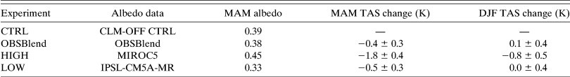
3. 量化地表反照率偏差的气候影响
3. Quantifying the climate impact of surface albedo biases
a. CLM 中的偏差：离线模式模拟（CLM-OFF）
a. Biases in CLM: Offline model simulations (CLM-OFF)
首先，我们简要介绍 CLM-OFF 所模拟 CTRL 平均气候的若干特征，这将有助于解读后续试验的结果。
First, we briefly describe some aspects of the mean simulated CTRL climate in CLM-OFF that will be helpful for interpreting the results of later experiments.
CLM-OFF 在秋季和冬季（SON 和 DJF）略微高估高纬度地区的反照率，并低估北方森林地区的春季反照率，这主要源于冠层积雪融化的时序（Thackeray et al. 2015）。
CLM-OFF slightly overestimates albedo at high latitudes in fall and winter (SON and DJF) and underestimates spring albedo across the boreal forest region, largely due to the timing of canopy snowmelt (Thackeray et al. 2015).
采用 Qian 强迫的 CLM-OFF 年平均气候态近地面气温在高纬度存在显著冷偏差（局地约 2°–8°C），且冬季和春季的偏差更为明显（图 1a、c；注意各图的尺度不同）。
Annual mean climatological near-surface air temperature from CLM-OFF with Qian forcing has a significant cold bias at high latitudes (~2°–8°C locally), with more pronounced biases in the winter and spring (Figs. 1a,c; note the differing scales).
这一冷偏差同样出现在 CRUNCEP 强迫的 CLM-OFF 模拟中，这表明模式过程可能是其成因。
This cold bias is also a feature of the CRUNCEP-forced CLM-OFF simulation, which suggests that model processes may be responsible.
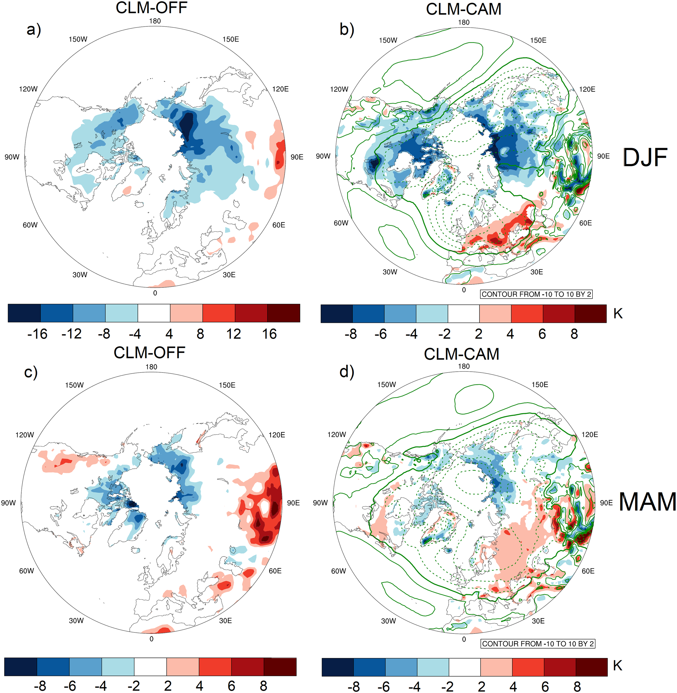
图 1。
Fig. 1.
陆地上 CLM CTRL 模拟与 NCEP-II 再分析之间的气候态平均 2米气温差（阴影；K）：(a)、(b) 为冬季（DJF），(c)、(d) 为春季（MAM）。
(a),(b) Difference in climatological mean winter (DJF) and (c),(d) spring (MAM) 2-m air temperature (shading; K) between the CLM CTRL simulations and NCEP-II reanalysis over land.
CLM-OFF 的比较时段为 1999–2004 年（Qian 强迫），而 CLM-CAM 的比较时段为 1982–2001 年。
The CLM-OFF comparisons are for 1999–2004 (Qian forcing), while the CLM-CAM comparisons are for 1982–2001.
CLM-CAM 的气候态海平面气压（SLP）偏差以等值线表示，间隔为 2 hPa，负值等值线以虚线表示。
Climatological SLP bias for CLM-CAM is shown by contours with an interval of 2 hPa, and negative contours are dashed.
注意，(a) 中的尺度加倍。
Note that the scale is doubled in (a).
接下来，我们比较采用两套不同强迫资料（CRUNCEP 和 Qian）的模拟所得雪水当量（SWE）。
Next, we compare SWE from simulations with the two different forcing datasets (CRUNCEP and Qian).
如图 2a 所示，采用 CRUNCEP 强迫时，相对于 Mudryk et al. (2015) 的 Blended-5 产品，气候态春季雪水当量（SWE）存在较大的区域偏差（>100 mm）。
As shown in Fig. 2a, there are large regional biases (>100 mm) in climatological spring SWE relative to the Blended-5 product of Mudryk et al. (2015) when CRUNCEP forcing is used.
CLM-OFF 在北美中纬度和东北部以及欧亚大陆西部积累了过多积雪，而在阿拉斯加/育空和西伯利亚东部则严重缺雪。
CLM-OFF accumulates too much snow across midlatitude and northeastern North America and western Eurasia and features a major lack of snow across Alaska/Yukon and eastern Siberia.
阿拉斯加/育空的负偏差源于 CRUNCEP 强迫资料低估该地区的冷季降水（Viovy 2018），这对局地模拟反照率有显著影响（未示出）。
The low bias over Alaska/Yukon is due to regional underestimation of cold season precipitation in the CRUNCEP forcing dataset (Viovy 2018), and this has a significant impact on simulated albedo locally (not shown).
由于高纬度气象站稀疏，北极降水的不确定性是一个普遍问题（Brown 2000）。
Uncertainty in Arctic precipitation is a common issue due to sparse meteorological stations at high latitudes (Brown 2000).
另一方面，Qian 强迫（Qian et al. 2006）的 CTRL 模拟使北半球热带外地区的雪水当量（SWE）偏差略有减小，尽管其偏差的空间分布型与采用 CRUNCEP 强迫的 CTRL 模拟相似（参见图 2a、b）。
On the other hand, the Qian-forced (Qian et al. 2006) CTRL simulation shows a modest reduction in SWE biases across the northern extratropics, although the spatial pattern of biases is similar to those in the CTRL simulation using CRUNCEP forcing (cf. Figs. 2a,b).
后续所有分析均聚焦于 Qian 驱动的模拟，从而减弱雪水当量（SWE）偏差对反照率的影响。
All subsequent analysis focuses on the Qian-driven simulations, which mitigates the impacts of SWE biases on albedo.
我们的目标是确定，订正 CLM 中的反照率偏差是否会减小温度和积雪偏差。
Our aim is to determine whether correcting the albedo biases in CLM reduces the temperature and snow biases.
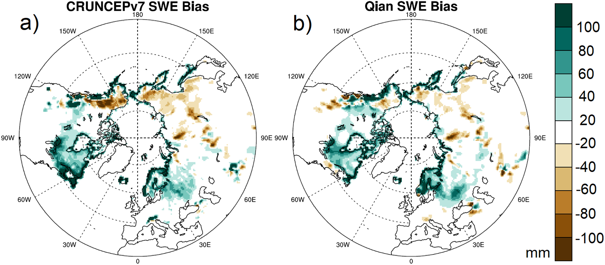
图 2。
Fig. 2.
模拟的气候态 3 月雪水当量（SWE）偏差（单位：mm）。
Bias in simulated climatological March SWE (units: mm).
采用不同强迫的两组 CLM-OFF 模拟：(a) CRUNCEPv7；(b) Qian。
Two simulations of CLM-OFF with different forcing: (a) CRUNCEPv7 and (b) Qian.
偏差相对于 Blended-5 数据集（Mudryk et al. 2015）计算。
Bias is calculated with regards to the Blended-5 dataset (Mudryk et al. 2015).
图 3 上排面板显示了 OBSblend 试验中地表反照率扰动的幅度：冬季（DJF）热带外大部分地区的反照率降低 0.05–0.25，春季（MAM）北方森林地区的反照率增加 0.05–0.15。
The upper panels of Fig. 3 show the magnitude of the perturbation to surface albedo in the OBSblend experiment: albedo is reduced by 0.05–0.25 in winter (DJF) over much of the extratropics and is increased by 0.05–0.15 in spring (MAM) across the boreal forest region.
尽管所施加的反照率变化在 DJF 最大（图 3b），但由于入射太阳辐射很低，它们对模拟冬季近地面气温的影响很小（图 3e）。
Although the forced changes to albedo are largest in DJF (Fig. 3b), they have little impact on simulated wintertime near-surface air temperature (Fig. 3e) because incoming solar radiation is very low.
春季预计是地表反照率偏差对气候影响最大的时期，因为此时积雪覆盖广泛且太阳辐照较强（Groisman et al. 1994；Qu and Hall 2014；Thackeray and Fletcher 2016）。
Springtime is expected to be the period when biases in surface albedo have the largest impact on climate because of the combination of widespread snow cover and higher insolation (Groisman et al. 1994; Qu and Hall 2014; Thackeray and Fletcher 2016).
在 OBSblend 中，3–5 月（MAM）的 NH45 平均反照率百分比变化略为负（−3%），这是因为植被遮蔽雪面，草地和苔原上的反照率降低因而超过了北方地区的反照率增加（图 3c）。
In OBSblend, the percent change in albedo averaged over NH45 during March–May (MAM) is slightly negative (−3%) because the lowering of albedo over grasslands and tundra outweighs the increased albedo in the boreal region due to vegetation masking the snow surface (Fig. 3c).
然而，订正反照率偏差会驱动大范围的春季降温，局地幅度为 −0.1 至 −0.5 K（图 3f），但春季积雪覆盖几乎没有变化（未示出）。
Yet, correcting the albedo biases drives widespread springtime cooling that locally ranges from −0.1 to −0.5 K (Fig. 3f), but with little change in spring snow cover (not shown).
这表明，北方纬度反照率的增加比更靠近极地地区的反照率降低具有更大的辐射影响，因为后者的太阳辐照较弱。
This implies that the increased albedo over the boreal latitudes has more radiative impact than more poleward albedo decreases, where insolation is weaker.
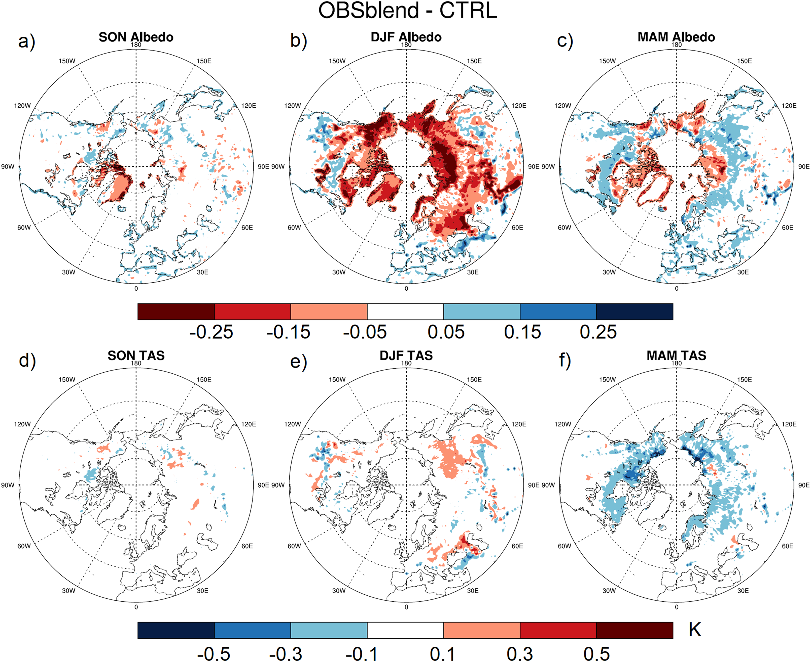
图 3。
Fig. 3.
CLM-OFF OBSblend 与 CTRL 试验（采用 Qian 强迫）之间的差异：(a)–(c) 为季节平均反照率，(d)–(f) 为近地面气温。
Difference in (a)–(c) seasonal mean albedo and (d)–(f) near-surface air temperature between CLM-OFF OBSblend and CTRL experiments (using Qian forcing).
图中给出秋季（SON）、冬季（DJF）和春季（MAM）的季节平均值。
Seasonal means for the fall (SON), winter (DJF), and spring (MAM) are shown.
CLM-OFF 结果显示，与 CESM 内部反照率偏差相关的近地面气温偏差相对较弱。
The CLM-OFF results reveal relatively weak near-surface air temperature biases associated with the internal albedo biases in CESM.
同样，CLM-OFF HIGH 试验中更大的反照率扰动产生了空间范围更广、但幅度较小的温度响应（图 S1）。
Similarly, the larger albedo perturbation from the CLM-OFF HIGH experiment shows more widespread, but small-magnitude, temperature responses (Fig. S1).
然而，在 CLM4 的离线配置中，近地面气温变化的幅度受到很强约束，因为虽然陆地表面温度是预报变量，大气温度却是指定的。
However, the magnitude of near-surface air temperature changes is highly constrained in the offline configuration of CLM4 because although land surface temperature is prognostic, atmospheric temperatures are prescribed.
离线配置还会阻止陆气相互作用对响应的任何调制，因此自然要问：当启用陆气耦合后，这一响应会变弱还是变强。
The offline configuration also prevents any modulation of the response due to land–atmosphere interaction, and therefore, it is natural to ask whether this response will become weaker or stronger when coupling between the land and atmosphere is enabled.
b. CESM 中的偏差：陆气相互作用的作用（CLM-CAM）
b. Biases in CESM: The role of land–atmosphere interaction (CLM-CAM)
我们首先简要考察 CLM-CAM CTRL 模拟的平均气候（即 CLM4 与大气模式耦合并由 CLM-OFF 的气候态反照率强迫的配置）。
We first briefly examine the mean climate of the CTRL simulation with CLM-CAM (i.e., the configuration of CLM4 that is coupled to the atmospheric model and forced with climatological albedo from CLM-OFF).
该模式的近地面气温存在偏差；在 DJF，西伯利亚北部、加拿大北极地区/阿拉斯加和北极中央盆地的冷偏差介于 2° 与 8°C 之间（图 1b）。
This model exhibits biases in near-surface air temperature with DJF cold biases of between 2° and 8°C across northern Siberia, Arctic Canada/Alaska, and the central Arctic basin (Fig. 1b).
与采用同一大气模式的其他研究（NCAR-CAM4；Neale et al. 2013）一致，CLM-CAM 的冬季高纬度大尺度大气环流型存在明显偏差（Xie et al. 2012；De Boer et al. 2012；Grodsky et al. 2012）。
Consistent with other studies using the same atmospheric model (NCAR-CAM4; Neale et al. 2013), CLM-CAM shows notable biases in its large-scale atmospheric circulation patterns over high latitudes in winter (Xie et al. 2012; De Boer et al. 2012; Grodsky et al. 2012).
图 1b 显示，极冠上空的海平面气压（SLP）存在明显负偏差，而中纬度存在正偏差，表明其呈现北极涛动（AO）正位相型（Thompson and Wallace 2001）。
Figure 1b shows a pronounced negative bias in sea level pressure (SLP) over the polar cap and positive biases in the midlatitudes, indicative of a positive Arctic Oscillation (AO) pattern (Thompson and Wallace 2001).
使用 CESM-CAM4 模式（注 2）开展的 20 年 AMIP 试验的全部 6 个成员也都呈现极冠上空海平面气压（SLP）减弱这一特征，说明这种行为在 NCAR-CAM4 中具有一致性。
Weakened SLP over the polar cap is also a feature of all six realizations of the 20-yr AMIP experiment performed using the CESM-CAM4 model,2 indicating that this behavior is consistent in NCAR-CAM4.
春季，中高纬度存在较大的暖偏差，同时极地上空的海平面气压（SLP）减弱（图 1d）。
During spring, there are substantial warm biases across the mid–high latitudes along with weakened SLP over the pole (Fig. 1d).
与 Blended-5 数据集相比，陆地雪水当量（SWE）的正、负两类偏差仍然很大（最高达 100 mm；未示出）。
Biases of both signs in SWE over land remain large when compared to the Blended-5 dataset (up to 100 mm; not shown).
更大的积雪偏差在一定程度上是预期之中的，因为与 CLM-OFF 模拟不同，CLM-CAM 中的降水由物理参数化方案预报。
Larger biases in snow are somewhat expected, because unlike in the CLM-OFF simulations, precipitation in CLM-CAM is prognostic based on physical parameterizations.
Neale et al. (2013) 对 CAM4 的全球气候给出了更详细的描述。
A more detailed description of the global climate of CAM4 is given by Neale et al. (2013).
图 4 给出 OBSblend 相对于 CTRL 试验的近地面气温以及辐射和非辐射能量通量响应。
Figure 4 presents the near-surface air temperature and radiative and nonradiative energy flux responses for the OBSblend experiment with reference to CTRL.
冬季北美和欧亚大陆出现最大达 |2 K| 的偶极型温度响应（NH45 陆地平均为 0.1 K；表 1），其中中亚和北美西北部变暖，西亚和斯堪的纳维亚降温（图 4a）。
A dipole temperature response of up to |2 K| is seen over North America and Eurasia in winter (NH45 land average is 0.1 K; Table 1), with warming over central Asia and northwestern North America and cooling over western Asia and Scandinavia (Fig. 4a).
春季的主导响应是北方地区降温 1–2.5 K（图 4b；NH45 陆地平均为 −0.4 K）。
The dominant response in spring is cooling of 1–2.5 K across the boreal region (Fig. 4b; NH45 land average is −0.4 K).
这表明，CLM-CAM 对相同扰动的响应是 CLM-OFF 响应的 4–5 倍（以 45°–60°N 陆地 TAS 的纬向平均为参照）。
This signals a 4–5 time amplification of the CLM-OFF response to the same perturbation (in reference to the zonal mean of TAS over 45°–60°N land).
这一响应似乎还减小了 CLM-CAM 在北方纬度的气候态暖偏差（图 1d；图 S3）。
This response also seems to reduce the climatological warm bias in CLM-CAM across boreal latitudes (Fig. 1d; Fig. S3).
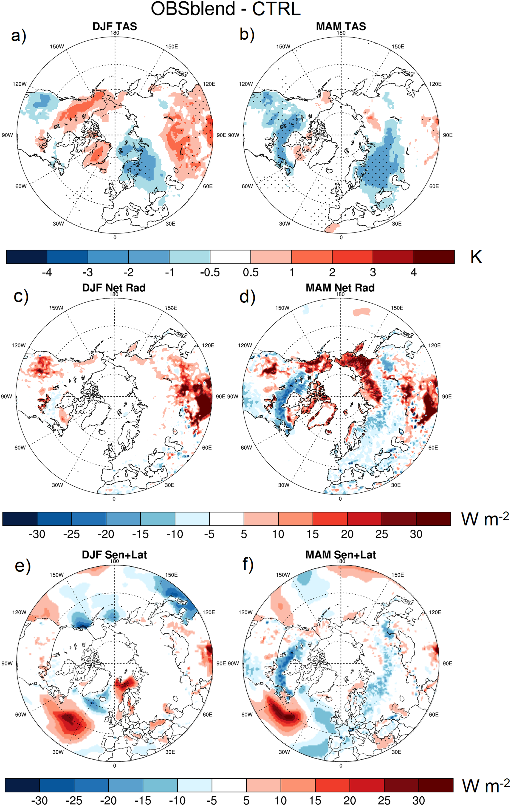
图 4。
Fig. 4.
CLM-CAM 对 OBSblend 反照率强迫的季节平均响应：(a)、(b) 为 2米气温（K），(c)、(d) 为地表净辐射（向下为正；W m−2），(e)、(f) 为感热与潜热湍流通量之和（向上为正；W m−2）。
CLM-CAM response to OBSblend albedo forcing in seasonal mean (a),(b) 2-m air temperature (K), (c),(d) net radiation at the surface (positive downward; W m−2), and (e),(f) sensible plus latent turbulent heat fluxes (positive upward; W m−2).
图中给出冬季和春季的季节平均值；由于反照率扰动较小，夏季和秋季未列出。
Seasonal means for the winter and spring are shown, while summer and fall are excluded because of less albedo perturbation.
在 (a)、(b) 中，点状标记表示温度变化达到统计显著（p < 0.05）的区域。
In (a),(b) stippling indicates regions of statistically significant temperature change (p < 0.05).
负的净辐射异常会使地表肤温（通过短波和长波）以及近地面气温（通过长波冷却）降低，而负的湍流通量会使地表肤温升高。
Negative net radiation anomalies cool both the skin temperature (through shortwave and longwave) and near-surface air temperature (through longwave cooling), whereas a negative turbulent flux warms the skin temperature.
多种因素似乎在驱动两个季节的近地面气温响应。
Diverse factors appear to be driving the near-surface air temperature responses in the two seasons.
冬季欧亚大陆中部的变暖由太阳加热增强驱动（短波往往主导净辐射项），但温度响应的其他特征与辐射驱动并不一致（图 4c）。
In winter, warming in central Eurasia is driven by increased solar heating (shortwave tends to dominate the net radiative term), but the other features of the temperature response are not consistent with being radiatively driven (Fig. 4c).
这大概是因为高纬度可用太阳辐照不足，无法将地表反照率扰动转化为地表能量收支响应的直接结果。
This is presumably a direct result of the lack of available insolation at high latitudes to translate the surface albedo perturbation to a response in the surface energy budget.
稍后我们将回到斯堪的纳维亚降温响应的（非辐射）成因。
We return later to the (nonradiative) causes of the cooling response over Scandinavia.
春季可用太阳辐照大得多，温度响应（图 4b）似乎主要由辐射驱动。
In spring, the available insolation is much larger, and the temperature response (Fig. 4b) appears to be mostly radiatively driven.
北美和欧亚大陆北方森林的降温与净辐射大范围减少 10–20 W m−2（图 4d）相关，而向大气的湍流热损失减少（图 4f）对其起到部分补偿作用。
Cooling over the boreal forests of North America and Eurasia is associated with widespread decreases of 10–20 W m−2 in net radiation (Fig. 4d) and partially compensated by reductions in turbulent heat loss to the atmosphere (Fig. 4f).
冬季缺乏明确的局地辐射强迫，意味着其他过程很可能也在促成大陆高纬度地区的温度响应。
The lack of a clear local radiative forcing in winter means that other processes are likely contributing to the temperature response across the continental high latitudes.
有一些证据表明，冬季温度响应是由环流变化产生的，而这些环流变化又由低纬度反照率相关强迫的远程作用驱动。
There is some evidence to suggest that the temperature response in winter is generated through circulation changes that are driven by remote albedo-related forcing at lower latitudes.
冬季最大的辐射强迫位于青藏高原及其邻近地区（图 4c）；已知该地区是与积雪覆盖年际变率相关的远程气候响应源区（Liu et al. 2017）。
The largest radiative forcing in winter is situated over the Tibetan Plateau and adjacent areas (Fig. 4c), a region that is known to be a source of remote climate responses associated with interannual variability in snow cover (Liu et al. 2017).
应当指出，在我们试验的整体大气响应中，只有一小部分具有统计显著性；但我们在此探讨其机制，以评估其对地表温度的潜在影响。
It should be noted that only a small portion of the overall atmospheric response in our experiments is statistically significant, but we explore the mechanisms here for potential impacts on surface temperature.
OBSblend 冬季和春季的大尺度大气环流响应主要表现为亚速尔高压（在 95% 水平上显著）和冰岛低压均减弱（图 5a、b），并投影到北大西洋涛动负位相（NAO；Hurrell et al. 2003）。
The large-scale atmospheric circulation response in OBSblend during winter and spring is dominated by a weakening of the Azores high (significant at 95%) and Icelandic low (Figs. 5a,b) that projects onto the negative phase of the North Atlantic Oscillation (NAO; Hurrell et al. 2003).
这似乎减小了 CLM-CAM 冬季北大西洋的气候态海平面气压（SLP）偏差（图 1b；图 S3）。
This appears to reduce climatological SLP bias across the North Atlantic in CLM-CAM during winter (Fig. 1b; Fig. S3).
为量化这一效应，我们计算里斯本与雷克雅未克之间的气候态平均 DJF 气压差（再分析资料为 23.4 hPa），并将其作为 NAO 的代理指标［类似于 Visbeck et al. (2001)；NAO 正位相时梯度更强］。
To quantify this effect, we assess the difference in climatological mean DJF pressure between Lisbon and Reykjavik (23.4 hPa according to reanalysis) as a proxy for the NAO [similar to Visbeck et al. (2001); a stronger gradient occurs during positive NAO].
在 OBSblend 中，相较于 CLM-CAM CTRL，这一气压梯度的偏差减小了 40%（CTRL 偏差：7.8 hPa）。
In OBSblend, the bias in this pressure gradient is reduced by 40% from CLM-CAM CTRL (CTRL bias: 7.8 hPa).
我们注意到，阿留申低压也有小幅（>1.5 hPa）减弱，但与其余大部分环流响应一样，这一响应在统计上并不显著。
We note that there is also a modest (>1.5 hPa) weakening of the Aleutian low, but this response, like much of the remaining circulation patterns, is not statistically significant.
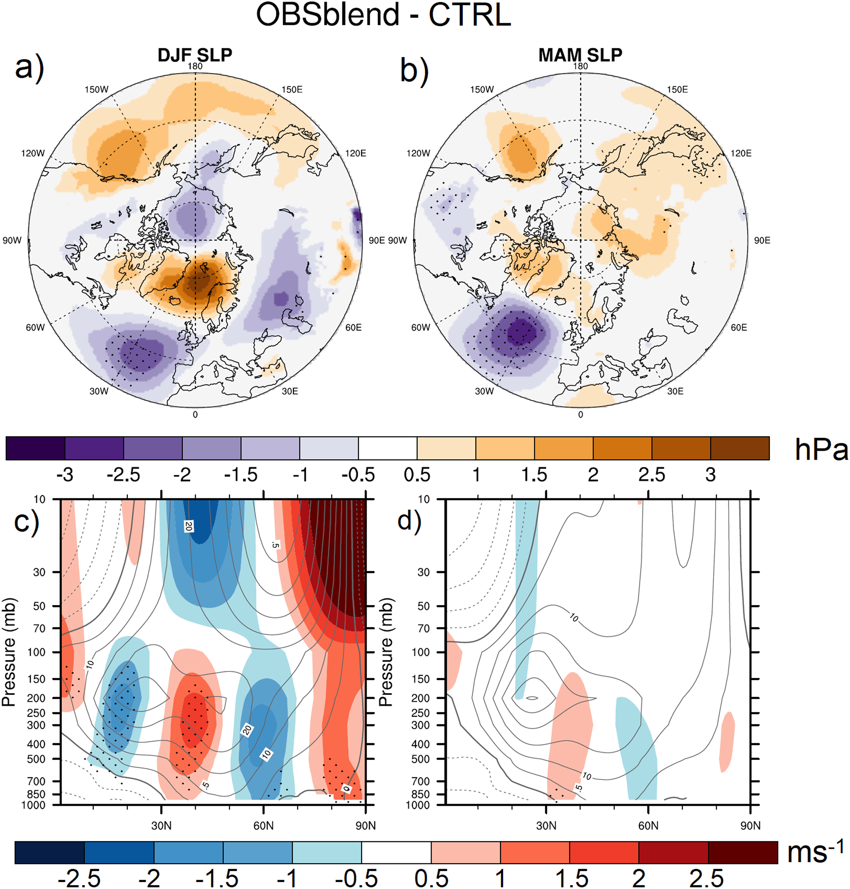
图 5。
Fig. 5.
OBSblend 与 CTRL 情形之间，CLM-CAM 气候态季节平均的 (a)、(b) 海平面气压（SLP）差异，以及 (c)、(d) 北大西洋（60°W–40°E）上空纬向平均纬向风差异。
CLM-CAM climatological seasonal mean difference in (a),(b) SLP and (c),(d) zonal mean zonal wind across the North Atlantic (60°W–40°E) between the OBSblend and CTRL cases.
点状标记表示达到统计显著（p < 0.05）的区域。
Stippling indicates regions of statistical significance (p < 0.05).
CTRL 的气候态纬向平均风速以灰色等值线表示，间隔为 5 m s−1。
The climatological zonal mean wind strength from CTRL is shown by gray contours representing 5 m s−1.
在这些环流变化的背景下，我们可以将图 4a 和 4b 中温度响应的某些方面解释为动力过程驱动。
In the context of these circulation changes, we can interpret certain aspects of the temperature responses in Figs. 4a and 4b as being dynamically driven.
冬季和春季，斯堪的纳维亚和俄罗斯东北部的降温区似乎与地面风对北极冷空气的平流增强有关，而这些地面风与 NAO 负位相型相联系（Hurrell et al. 2003）。
In both winter and spring, the region of cooling over Scandinavia and northeastern Russia appears to be associated with increased advection of cold Arctic air by surface winds linked to the negative NAO pattern (Hurrell et al. 2003).
DJF 期间阿拉斯加/加拿大西部的大部分增暖信号与加拿大西海岸外的高压脊有关，该高压脊驱动异常增暖，且主要发生在 2 月（未示出）。
Much of the warming signal in DJF across Alaska/western Canada is associated with a high-pressure ridge off the west coast of Canada that drives anomalous warming, predominantly during February (not shown).
冬季，由于北大西洋气压梯度减弱，北大西洋区（60°W–40°E）30°–40°N 附近的纬向平均纬向风还发生了微弱但显著的向极移动（图 5c）。
There is also a weak, but significant, poleward movement in the zonal mean zonal winds around 30°–40°N over the North Atlantic sector (60°W–40°E) during winter because of a reduced North Atlantic pressure gradient (Fig. 5c).
尽管地表气候发生了这些大尺度改变，北半球热带外陆地的冷季平均降水总体上基本不变（未示出）。
The mean cold season precipitation over northern extratropical land is largely unchanged on average despite these large-scale alterations to surface climate (not shown).
然而，春季北方森林地区的反照率增加（图 3c），会因限制雪层吸收的短波辐射而自然地减少融雪。
However, increasing the albedo in spring over the boreal forest region (Fig. 3c) naturally reduces snowmelt by limiting shortwave radiation absorbed by the snowpack.
这一变化与较低的近地面气温（图 4b）共同导致春季积雪覆盖率（SCF）正异常（图 6），任一给定月份的局地幅度均可超过 +10%–20%（未示出）。
This change, coupled with cooler near-surface air temperatures (Fig. 4b), leads to positive spring snow-cover fraction (SCF) anomalies (Fig. 6) that locally exceed +10%–20% for any given month (not shown).
积雪覆盖期延长进而会影响随后数月的近地表土壤湿度（未示出），从而可能影响地表能量收支并促成长时间尺度的大气变率（Eltahir 1998；Liu 2003）。
Prolonged snow-cover duration in turn influences the near-surface soil moisture during the following months (not shown), which can affect the surface energy budget and contribute to long-term atmospheric variability (Eltahir 1998; Liu 2003).
因此，订正 CLM-CAM 中的地表反照率偏差会引起一定的大尺度大气变化，并且似乎会减小春季北方地区的近地面气温偏差；而冬季偏差在斯堪的纳维亚被放大，在北美西北部受到抑制。
Therefore, correcting surface albedo biases in CLM-CAM drives some large-scale atmospheric change and appears to reduce near-surface air temperature bias across the boreal region in spring, while winter bias is amplified over Scandinavia and limited over northwestern North America.
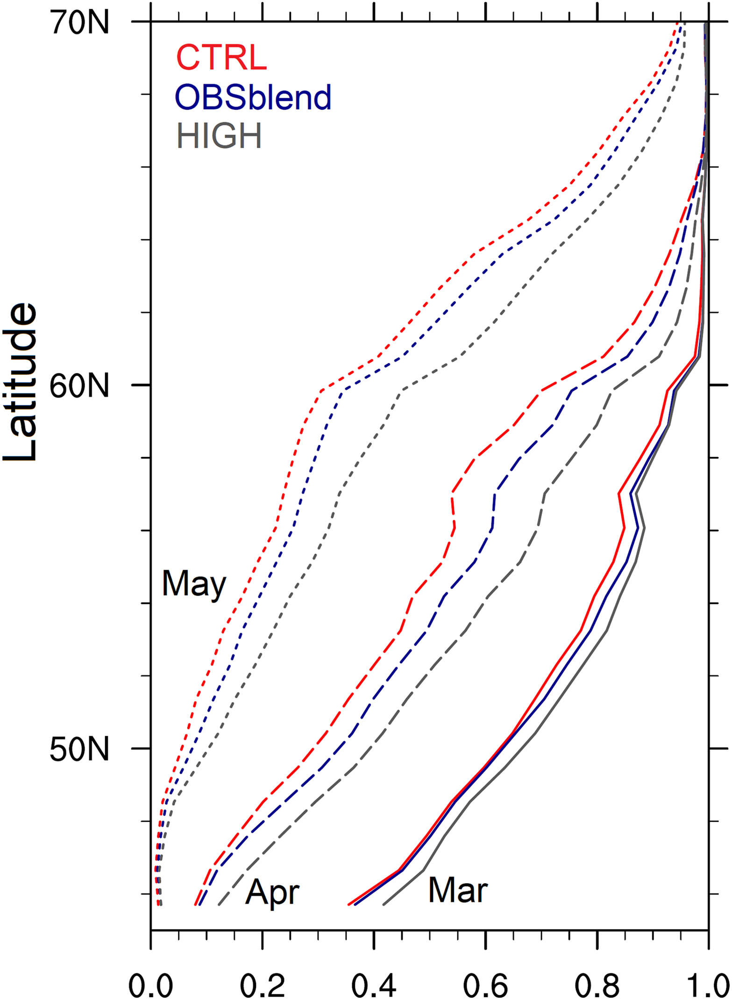
图 6。
Fig. 6.
CLM-CAM OBSblend（蓝线）、CTRL（红线）和 HIGH（灰线）中春季各月的气候态纬向平均积雪覆盖率。
Climatological monthly zonal mean spring snow-cover fraction in CLM-CAM OBSblend (blue lines), CTRL (red lines), and HIGH (gray lines).
OBSblend 和 HIGH 情形的积雪覆盖率始终高于 CTRL。
Snow cover is consistently greater in the OBSblend and HIGH cases than CTRL.
永久积雪或冰盖区域（即格陵兰）在此被掩膜。
Areas of permanent snow or ice cover are masked here (i.e., Greenland).
c. 其他 CMIP5 模式中的偏差
c. Biases in other CMIP5 models
尽管与其他 CMIP5 模式相比，CLM-CAM 对地表反照率（幅度和空间型）的总体表征相对较好，但我们仍在 CLM-CAM 中采用指定反照率的方法，以评估 CMIP5 集合中偏差可能产生的影响。
While the overall representation of surface albedo (magnitude and spatial pattern) in CLM-CAM is relatively good compared to other CMIP5 models, we use our prescribed albedo methodology with CLM-CAM to assess the possible influence of biases within the CMIP5 ensemble.
CMIP5 模式在积雪覆盖地表反照率方面存在很大偏差，而且在大多数模式中，这一问题与反照率的幅度有关，而不是与时序有关（CLM 中的问题则在于时序）。
CMIP5 models show substantial biases in snow-covered surface albedo, and in most models, this issue relates to the magnitude of albedo, rather than the timing (as in CLM).
这种幅度偏差为我们进一步检验模式敏感性提供了条件；尽管我们无法运行这些其他模式，但通过用它们输出的反照率强迫 CLM-CAM，仍可得到一些值得关注的结果（该配置下 CLM-OFF 的响应因指定大气强迫而较弱，故见图 S1）。
This magnitude bias provides us with a further test of model sensitivity, and although we are unable to run these other models, some interesting results can be derived by forcing CLM-CAM with their albedo output (responses for CLM-OFF in this configuration are shown in Fig. S1, because they are weak due to the prescribed atmospheric forcing).
首先，我们在采用 MIROC5 反照率空间型的高幅度实验（HIGH）中施加强扰动（相对于 CTRL，NH45 的 MAM 反照率增加 15%）。
First, we apply a strong perturbation (+15% NH45 MAM albedo relative to CTRL) in a high-magnitude experiment (HIGH) using the albedo pattern from MIROC5.
在 DJF 和 MAM，MIROC5 的气候态平均反照率在大多数有积雪覆盖的纬度上高得不切实际（图 7b、c），尤其是在森林区和青藏高原地区。
The climatological mean albedo from MIROC5 is unrealistically high across most snow-covered latitudes in DJF and MAM (Figs. 7b,c), particularly in forested regions and over the Tibetan Plateau.
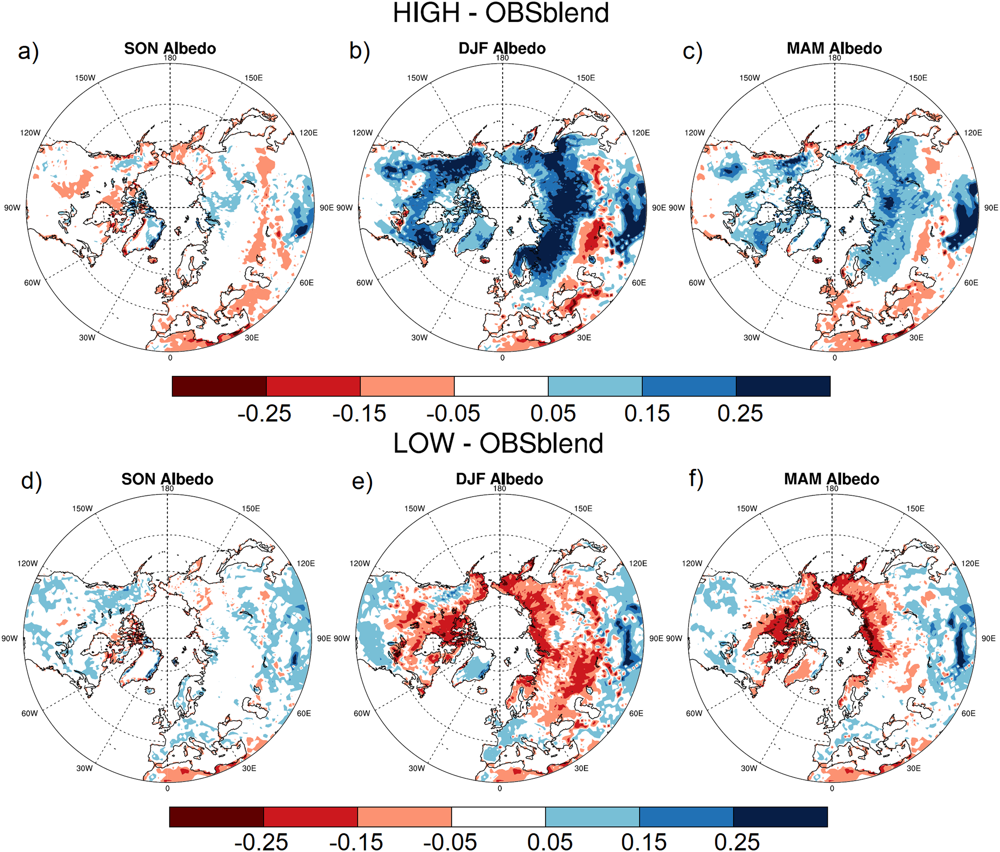
图 7。
Fig. 7.
（a）–（c）HIGH 与 OBSblend 实验之间以及（d）–（f）LOW 与 OBSblend 实验之间的季节平均反照率差异。
Difference in seasonal mean albedo between the (a)–(c) HIGH and OBSblend experiments and (d)–(f) LOW and OBSblend experiments.
图中给出了秋季（SON）、冬季（DJF）和春季（MAM）的季节平均值。
Seasonal means for the fall (SON), winter (DJF), and spring (MAM) are shown.
下文将 HIGH 实验与 OBSblend 实验而非 CTRL（见表 1）进行比较，因为我们关注的是相对于观测的反照率偏差所产生的影响，而不是相对于 CLM4 默认的（有偏）内部反照率所产生的影响。
In the following, the HIGH experiment is compared to the OBSblend experiment, rather than CTRL (which is shown in Table 1), because we are interested in the impact of albedo biases relative to observations, not relative to the default (biased) internal albedo in CLM4.
HIGH 实验所代表的反照率扰动远强于 OBSblend（表 1）；该实验在冬季（NH45 陆地平均为 −0.9 K）和春季（NH45 陆地平均为 −1.4 K；图 8b、c）使北半球热带外地区产生了 1–4 K 的显著近地面异常降温。
In the HIGH experiment—which represents a much stronger albedo perturbation than OBSblend (Table 1)—significant anomalous near-surface cooling of 1–4 K is produced across the NH extratropics in winter (NH45 land average is −0.9 K) and spring (NH45 land average is −1.4 K; Figs. 8b,c).
这相当于春季陆地平均降温幅度超过 OBSblend 实验的 4 倍（表 1）。
This equates to an average spring land cooling that is more than 4 times that in the OBSblend experiment (Table 1).
秋季的响应相对较弱，因为 HIGH 中的反照率扰动主要局限于冬季和春季（图 7）。
The response in fall is relatively weak because the albedo perturbation in HIGH is primarily confined to the winter and spring (Fig. 7).
此外，这种近地面降温由 HIGH 实验中的冬季反照率偏差所驱动；这些偏差幅度足够大且向南延伸得足够远，因而使地表吸收的能量大幅减少（向上通量增大），并且这一变化持续贯穿冬季和春季（未展示）。
Furthermore, the near-surface cooling is driven by wintertime albedo biases in the HIGH experiment that are large enough, and extend far enough south, that they induce a large reduction in the energy absorbed at the surface (more upward flux) that persists throughout winter and spring (not shown).
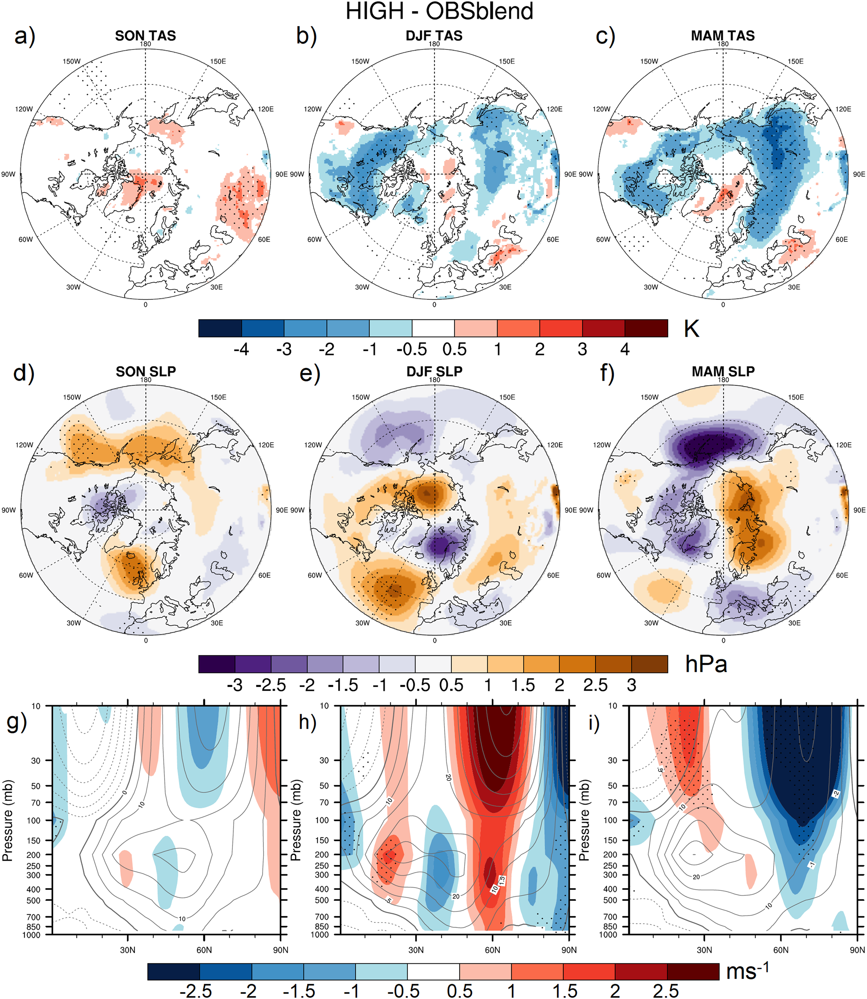
图 8。
Fig. 8.
季节平均（a）–（c）2米气温（K）、（d）–（f）海平面气压（SLP；hPa）以及（g）–（i）北半球纬向平均风（m s−1）对高幅度反照率强迫的响应。
Response to high-magnitude albedo forcing in seasonal mean (a)–(c) 2-m air temperature (K), (d)–(f) SLP (hPa), and (g)–(i) NH zonal mean winds (m s−1).
图中给出了秋季、冬季和春季的季节平均值；由于夏季的反照率扰动较小，故未列出夏季。
Seasonal means for the fall, winter, and spring are shown, while summer is excluded because of less albedo perturbation.
打点区域表示具有统计显著性的区域（p < 0.05）。
Stippling indicates regions of statistical significance (p < 0.05).
OBSblend 的气候态纬向平均风速以灰色等值线表示，等值线间隔为 5 m s−1。
The climatological zonal mean wind strength from OBSblend is shown by gray contours representing 5 m s−1.
HIGH 中增强的地表降温还与大尺度大气环流变化相关，这体现为北半球热带外部分地区的海平面气压（SLP）出现了一些显著响应。
The enhanced surface cooling in HIGH is also associated with changes in the large-scale atmospheric circulation, as demonstrated by some significant responses in SLP over portions of the northern extratropics.
冬季，环流响应投影到北大西洋涛动（NAO）正位相上（图 8e），同时北大西洋风暴路径（约 60°N；图 8h）向极地方向偏移。
During winter, the circulation response projects onto the positive phase of the NAO (Fig. 8e), with a poleward shift in the North Atlantic storm track (~60°N; Fig. 8h).
同样，冬季变化可能与远程反照率强迫有关；该强迫的特征是青藏高原冬季地表吸收的短波辐射大幅减少（类似于高积雪覆盖年份；图 S2）。
Once again, winter changes are likely linked to remote albedo forcing, which is characterized by large decreases in absorbed shortwave at the surface during winter over the Tibetan Plateau (analogous to a high snow-cover year; Fig. S2).
春季，响应主要表现为阿留申低压在统计上显著加深（图 8f），以及平流层极涡显著减弱且这一减弱向下延伸至地表（图 8i）。
In spring, the response is dominated by a statistically significant deepening of the Aleutian low (Fig. 8f) and a significant weakening of the stratospheric polar vortex that extends down to the surface (Fig. 8i).
这些海平面气压（SLP）变化与 Liu 等（2017）的结果在一定程度上一致；他们表明，青藏高原异常偏高的积雪覆盖能够驱动阿留申低压加深以及北大西洋上空海平面气压（SLP）升高。
These SLP changes are somewhat consistent with the findings of Liu et al. (2017), who show that anomalously high snow cover over the Tibetan Plateau can drive a deepening of the Aleutian low and SLP increases over the North Atlantic.
与 OBSblend 中的情形相同，HIGH 中春季的冷异常也与积雪覆盖持续时间延长和较大的积雪覆盖正异常相关（图 6）。
As in OBSblend, the cold anomalies during spring in HIGH are also associated with extended snow-cover duration and large positive snow-cover anomalies (Fig. 6).
最后，我们考察 CLM-CAM 对取自 IPSL-CM5A-MR 模式的指定低反照率偏差（LOW 实验；见表 1）的响应；在有积雪时，该模式在北半球热带外的大部分陆地上呈现出明显比观测更暗的地表（图 7e、f）。
Last, we investigate the CLM-CAM response to prescribed low-albedo biases taken from the IPSL-CM5A-MR model (the LOW experiment; see Table 1), which exhibits a substantially darker surface than observations over most NH extratropical land when snow is present (Figs. 7e,f).
最显著的例外是，LOW 实验中青藏高原的反照率高于 OBSblend（图 7d–f），这可能是因为 IPSL-CM5A-MR 模式在该区域的积雪范围更大（由地表反照率推断；IPSL 模式没有可用的 CMIP5 积雪输出）。
The most notable exception is that the albedo across the Tibetan Plateau is higher in the LOW experiment than in OBSblend (Figs. 7d–f), likely as result of greater regional snow extent in the IPSL-CM5A-MR model (inferred from surface albedo; CMIP5 snow output is unavailable for the IPSL models).
反照率扰动驱动地表净短波辐射增加，其中春季的增幅最大（6.2 W m−2），冬季次之（2.2 W m−2）。
The albedo perturbation drives an increase in surface net shortwave radiation that is strongest during spring (6.2 W m−2) and winter (2.2 W m−2).
相比之下，秋季响应的符号相反（减少 3.5 W m−2），因为 LOW 中无积雪陆地的反照率高于观测（图 7d）。
By contrast, the response in fall is of opposite sign (a decrease of 3.5 W m−2) because the snow-free land albedo in LOW is higher than observed (Fig. 7d).
与反照率扰动的时间变化一致，LOW 在秋季比 OBSblend 更冷，尤其是在无积雪区（图 9a）；冬季北美大幅增暖、欧亚大陆降温，而春季各地的响应均相当弱（图 9b、c）。
Consistent with the temporal variation in the albedo perturbation, LOW is cooler than OBSblend in fall, particularly over snow-free areas (Fig. 9a), while in winter there is strong warming over North America and cooling over Eurasia and a rather weak response everywhere in spring (Figs. 9b,c).
鉴于地表变暗，该实验中高纬度增暖幅度有限多少有些出人意料，但这很可能是低纬度符号相反的竞争性强迫所致（即青藏高原和无积雪区的反照率升高）。
The limited high-latitude warming in this experiment is somewhat surprising, given the darkened surface, but is likely a result of opposite-signed competing forces at lower latitudes (i.e., increased albedo over the Tibetan Plateau and snow-free areas).
最强的区域温度响应出现在冬季的大平原北部，局地超过 3°C。
The strongest regional temperature response occurs over the northern Great Plains during winter, exceeding 3°C locally.
这一增暖型还伴随着阿留申低压显著加深（图 9e），后者有助于驱动阿拉斯加和东西伯利亚上空的冷异常。
This warming pattern is also accompanied by a significant deepening of the Aleutian low (Fig. 9e), which helps drive cool anomalies over Alaska and eastern Siberia.
其他大尺度差异包括亚速尔高压增强，以及欧亚大陆大范围地区的海平面气压（SLP）升高（图 9e）。
Other large-scale differences include a strengthening Azores high and increased SLP over large portions of continental Eurasia (Fig. 9e).
在其他季节，几乎没有显著的低层大气响应。
During other seasons, there is very little low-level atmospheric response of significance.
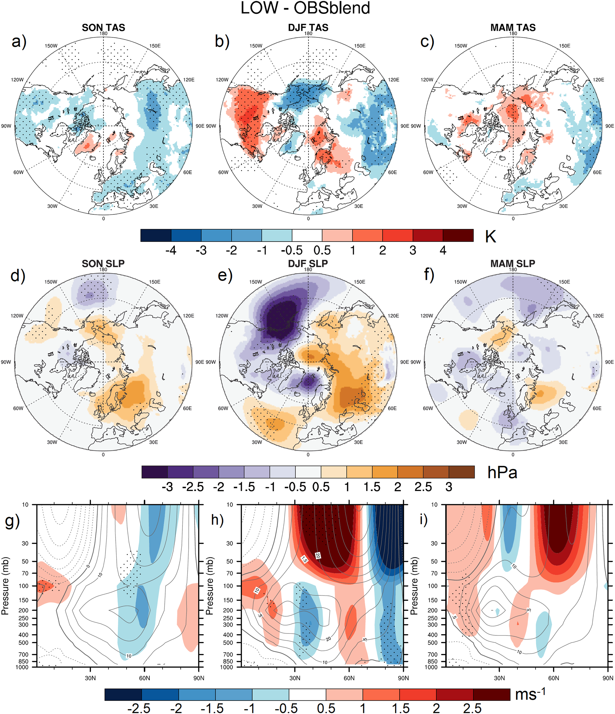
图 9。
Fig. 9.
同图 8，但为 LOW 实验相对于 OBSblend 的结果。
As in Fig. 8, but for the LOW experiment relative to OBSblend.
d. 分离区域型
d. Isolating regional patterns
迄今所述实验改变了北半球热带外大部分地区的反照率，因此难以准确判定哪些地点可能对驱动所产生的响应具有重要作用。
The experiments described so far change albedo over much of the NH extratropics, which makes it difficult to pinpoint which locations may be important in driving the generated responses.
在此，我们试图分离不同区域的反照率偏差在影响研究结果方面可能发挥的作用。
Here, we attempt to isolate the role that albedo biases across different regions may play in influencing our results.
图 10 展示了四个 CLM-CAM 实验中三种不同陆地覆盖类型（北方森林、平原和非北方苔原）上模拟地表反照率的逐月演变，以及它们相对于 OBSblend（黑线）的温度响应。
Figure 10 shows the monthly evolution of simulated surface albedo from each of the four CLM-CAM experiments over three distinct land-cover types (boreal forest, plains, and nonboreal tundra) and their temperature responses with respect to OBSblend (black line).
HIGH（MIROC5）中北方森林的反照率峰值接近 OBSblend 和其他模式的两倍。
Peak albedo over the boreal forest in HIGH (MIROC5) is nearly double that of OBSblend and the other models.
与此同时，HIGH 中北方森林区的近地面气温要低得多。
This coincides with much cooler near-surface air temperatures over the boreal in HIGH.
另一方面，与 OBSblend 相比，CLM-CAM（CTRL）中反照率较早下降导致北方地区春季显著增暖。
On the other hand, early albedo decreases in CLM-CAM (CTRL) result in significant spring warming across boreal regions compared to OBSblend.
这两个极端情形之间的区域平均温差为 4 K。
The mean regional temperature difference between these two extremes is 4 K.
在平原地区，春季也存在类似的温度摆幅（可能是因为其紧邻北方地区），但 LOW 情形在无积雪季节要冷得多。
Across the plains, there is a similar temperature swing in spring (possibly due to its close proximity to the boreal region), but much cooler conditions during the snow-free season in the LOW case.
这些较冷条件与 LOW 中无积雪地表反照率的偏高有关。
These cooler conditions are tied to a high bias in LOW’s snow-free surface albedo.
最后，尽管各实验在非北方苔原地区的反照率差异很大，但温度响应相对较弱——这可能是因为在积雪季的大部分时间里，这些纬度接收的太阳辐射较少。
Finally, although there are very large albedo differences between experiments across the nonboreal tundra, the temperature response is relatively weak—likely a result of low insolation at these latitudes during most of the snow season.
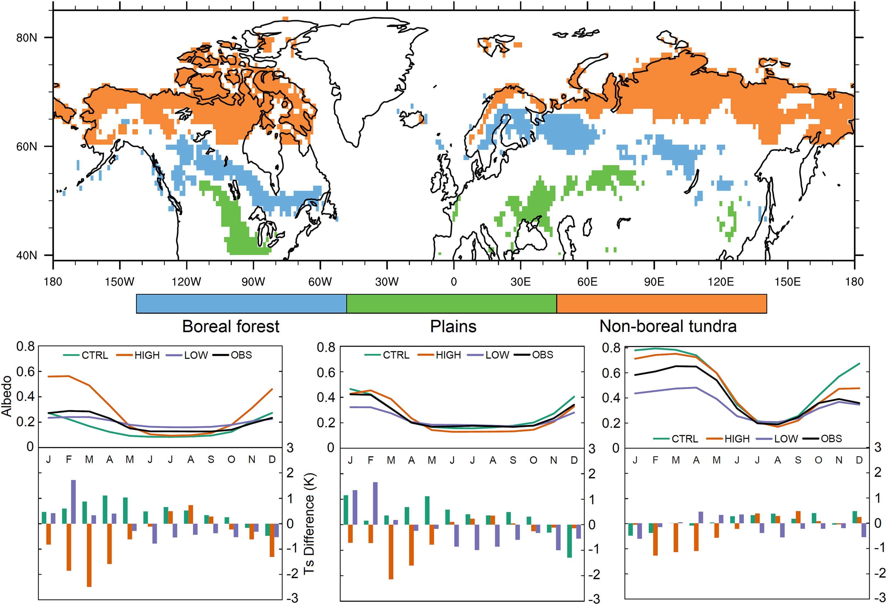
图 10。
Fig. 10.
本文采用的三个不同自然地理区域（北方森林、平原和非北方苔原）分布图，以及反照率和温度逐月响应的分区结果。
Map of three distinct physiographic regions used here (boreal forest, plains, and nonboreal tundra) along with a regional breakdown of the monthly albedo and temperature responses.
温度差（柱状图）以 OBSblend 实验（黑线）为参照。
The temperature difference (bar plots) is with respect to the OBSblend experiment (black line).
非北方苔原和北方森林区域按照 Thackeray 等（2015）的定义划定；根据 CESM 陆地覆盖数据，平原区域由 40°N 以北草地与农田合计覆盖率超过 75% 的地区组成。
The nonboreal tundra and boreal forest regions are defined as by Thackeray et al. (2015), while the plains are composed of areas poleward of 40°N where grassland and cropland combine to exceed 75% coverage according to CESM land-cover data.
为获得更定量的指标，我们绘制图 10 中各区域平均后的逐月反照率差异与温度差异的散点图，并计算单位反照率强迫对应的温度变化（图 S3）。
For a more quantitative metric, we scatter the monthly albedo and temperature differences from Fig. 10 averaged across each of these regions and calculate the temperature change per unit of albedo forcing (Fig. S3).
这些差异均相对于 OBSblend 计算并涵盖所有月份，这意味着我们同时捕捉了积雪覆盖和无积雪条件下的反照率偏差。
The differences are relative to OBSblend and include all months, meaning that we capture snow-covered and snow-free albedo biases.
三个实验中，北方森林、平原和苔原的平均变化分别为 0.11、0.16 和 0.03 K/%。
The average change across the three experiments is 0.11, 0.16, and 0.03 K per % over the boreal, plains, and tundra, respectively.
这表明，平原地区的反照率偏差对温度的影响最强，而苔原地区的反照率偏差与温度响应的联系最弱。
This illustrates that albedo biases over the plains have the strongest influence on temperature, while albedo biases over the tundra have the weakest link to temperature responses.
4. 讨论与结论
4. Discussion and conclusions
本研究采用了若干新颖的气候模式模拟，并在模拟中指定地表反照率，以期更好地理解北半球反照率偏差可能对模拟气候造成的影响。
This study utilizes several novel climate model simulations, which prescribe surface albedo in an effort to better understand the potential impacts that Northern Hemisphere albedo biases have on simulated climate.
我们发现，尽管热带外地区的冬季反照率偏差可能很大，但由于大多数积雪覆盖区的入射辐射较弱，这些偏差对气候的直接影响很小。
We find that although extratropical winter albedo biases can be large, they have very little direct influence on climate because of low incoming radiation over most snow-covered areas.
有迹象表明，冬季产生的响应与来自更南方反照率强迫的远程影响有关（例如青藏高原地区）。
There is a suggestion that responses generated during winter are tied to remote influences from albedo forcing farther south (e.g., over the Tibetan Plateau).
由反照率强迫引起的远程大气异常与以往研究一致（例如 Fletcher et al. 2009；Allen and Zender 2010；Liu et al. 2017）。
Remote atmospheric anomalies due to albedo forcing are consistent with prior work (e.g., Fletcher et al. 2009; Allen and Zender 2010; Liu et al. 2017).
另一方面，春季反照率偏差与北半球气候的显著局地和远程响应相关，这些响应体现在近地面气温、积雪覆盖以及（稳健性较弱的）大尺度大气环流中。
Alternatively, spring albedo biases are associated with significant local and remote NH climate responses in near-surface air temperature, snow cover, and, less robustly, large-scale atmospheric circulation.
启用陆气耦合时，气温和积雪的变化也会显著增强（相对于 CLM-OFF 模拟）。
Changes to temperature and snow are also greatly enhanced when land–atmosphere coupling is enabled (relative to CLM-OFF simulations).
将 CESM 中的反照率向卫星反演值校正，会驱动大气环流发生一些显著的大尺度变化，并且似乎能减小春季整个北方地区的近地面气温偏差（图 S4）。
Correcting the albedo in CESM toward satellite-derived values drives some significant large-scale changes in atmospheric circulation and appears to reduce near-surface air temperature bias across the boreal region in spring (Fig. S4).
冬季气温偏差在斯堪的纳维亚略有增大，而在北美西北部略有减小（图 S4）。
Winter temperature bias is slightly increased over Scandinavia and slightly reduced over northwestern North America (Fig. S4).
春季，北半球热带外陆地出现稳健的降温（1–3 K；图 4b）；只在北方森林区施加反照率强迫，便可在很大程度上再现这一特征（文本 S2）。
Robust cooling is produced during spring across northern extratropical land (1–3 K; Fig. 4b), a feature that can be largely reproduced if we only apply albedo forcing across the boreal forest (Text S2).
冬季海平面气压的气候态偏差型也发生反转（图 5a），从而减弱了模式偏向 NAO/AO 正位相的倾向（图 S4）。
There is also a pattern reversal of the climatological biases in winter sea level pressure (Fig. 5a), reducing the model’s tendency toward a positive NAO/AO (Fig. S4).
我们还发现，校正地表反照率会对积雪覆盖等陆面属性产生连带影响。
We also find that correcting surface albedo has knock-on effects for land surface properties such as snow cover.
冷异常会延长积雪覆盖持续时间，并使春季融雪期间的积雪覆盖面积增大。
Cold anomalies extend snow-cover duration and lead to greater snow-covered area during spring melt.
这或可部分解释为何春季积雪覆盖范围的模拟表征差异如此之大（Thackeray et al. 2016）。
This could partially explain why the representation of snow-cover extent is so variable during spring (Thackeray et al. 2016).
相对于观测到的积雪覆盖地表反照率幅度，其他 CMIP5 模式的反照率偏差比 CLM4 更为严重。
Other CMIP5 models feature more drastic albedo biases than CLM4 relative to the magnitude of observed snow-covered surface albedo.
为展示准确表征反照率的潜在重要性，我们施加了从反照率偏差最高和最低的 CMIP5 模式中提取的反照率空间型。
To demonstrate the potential importance of correctly representing albedo, we impose albedo patterns extracted from the CMIP5 models with the highest and lowest albedo biases.
我们发现，这些反照率扰动可以产生很大的气候影响，由此引出一个问题：CMIP 模式之间相当一部分的气候差异是否可能源于它们对陆地反照率的表征。
We find that these albedo perturbations can generate large climate impacts, raising the question of whether a significant portion of the climate difference between CMIP models may be due to their representation of land albedo.
当反照率从 CESM 较低的森林反照率变为 MIROC5 较高的反照率时，我们发现中高纬地区的季节平均近地面气温变化约为 4 K（该反照率来自 5 个 CMIP5 历史模拟的集合平均）。
We find an approximately 4-K change in seasonal mean near-surface air temperature over the mid–high latitudes from the low forested albedo of CESM to the high albedo of MIROC5 (derived from the ensemble mean of five CMIP5 historical simulations).
作为参照，CMIP5 集合中北半球热带外陆地春季气候态（1980–2005 年）平均气温的模式间离散度接近 5°（图 S5）。
To put this into perspective, the CMIP5 ensemble has an intermodel spread in climatological (1980–2005) mean NH extratropical land spring temperature of nearly 5° (Fig. S5).
由于春季气温接近冰点，绝对温度的微小变化就可能对积雪和地表辐射状况产生很大影响。
Because spring temperatures are close to the freezing point, small changes in absolute temperature can have large impacts on the snow and surface radiation regimes.
预计校正反照率偏差会直接影响季节气温偏差，但影响方向未必符合预期（即趋近观测）。
It is expected that correcting albedo biases will have a direct impact on seasonal temperature biases, but it may not be in the desired direction (toward observations).
因此，积雪覆盖地表反照率偏差较大的模式不仅容易在与雪–反照率反馈（SAF）强度相关的未来气候模拟中产生误差，也容易在季节平均气候模拟中产生误差。
Therefore, models with substantial biases in snow-covered surface albedo are susceptible not only to modeling errors related to future climate tied to SAF strength, but also to mean seasonal climate.
在所有试验中，由于大气内部变率较大，北半球大尺度环流响应大多缺乏稳健性；但我们确实发现海平面气压（SLP）的季节平均值在局地发生显著变化。
In all experiments, much of the NH large-scale circulation response shows a lack of robustness due to large internal atmospheric variability, but we do find locally significant seasonal mean changes to SLP.
在 HIGH 试验中，DJF 期间亚速尔高压显著增强，MAM 期间阿留申低压显著加深（图 8e、f）。
In the HIGH experiment, there is significant strengthening of the Azores high during DJF and deepening of the Aleutian low during MAM (Figs. 8e,f).
相比之下，LOW 试验在 DJF 期间形成了这些相同特征（图 9e）。
By contrast, the LOW experiment develops these same features during DJF (Fig. 9e).
这一结果略显反直觉，因为符号相反的反照率扰动与相似的海平面气压（SLP）响应相关联。
This result is slightly counterintuitive, because albedo perturbations of opposite sign are associated with similar SLP responses.
我们推测，冬季海平面气压（SLP）响应源自青藏高原及其邻近地区；在这些地区，HIGH 和 LOW 试验冬季的反照率强迫大体一致（图 S2）。
We hypothesize that the winter SLP responses stem from the Tibetan Plateau and adjacent areas, where the albedo forcing is fairly consistent in the HIGH and LOW experiments during winter (Fig. S2).
所提出的物理机制是：反照率变化会引发近地面气温响应，使向上的罗斯贝波活动通量增强；该通量可改变平流层环流，随后这些异常可向下传播穿过对流层。
The proposed physical mechanism is that the albedo changes induce a near-surface temperature response that increases upward Rossby wave activity flux, which can alter stratospheric circulation, and these anomalies can then propagate down through the troposphere.
在我们的试验中对这些机制进行详细研究超出了本研究范围，但这些机制确实可为本文所示的部分远程气候响应提供一种可能解释。
Detailed investigation of these mechanisms in our experiments is beyond the scope of this study, but they do provide a possible explanation for some of the remote climate responses shown here.
另一种可能是，就海平面气压（SLP）响应而言，这些模拟的时长不足以充分分离强迫与非强迫气候变率。
Alternatively, it is possible that these simulations are not long enough to fully separate forced and unforced climate variability when it comes to the SLP responses.
未来研究应延长类似试验的时长，以进一步提高信噪比，尽管将我们的试验再延长 5 年并未改变结果。
Future studies should increase the length of similar experiments to further improve signal-to-noise ratios, although adding an additional 5 years to our experiments does not change the results.
本研究的另一项局限在于，CMIP5 模式输出中缺少可见光和近红外两个辐射分量，这迫使我们在模拟中对这两个分量采用相同的反照率值（文本 S1）；而实际上，积雪和植被表面的可见光反照率与近红外反照率可能差异很大。
An additional limitation of this study is caused by the lack of visible and near-infrared streams of radiation from CMIP5 model output, which forces us to use the same albedo value for both components in our simulations (Text S1), when in reality they can be quite different over snow and vegetation.
鉴于我们关注模式对反照率偏差的敏感性，本研究这种简单直接的强制设定方法是有效的。
Since we are interested in the sensitivity of the model to albedo biases, the brute force nature of our approach is effective.
例如，将观测约束纳入模式可以采用数据同化等更精巧的方法，但根据本研究的目标，没有必要这样做。
More elegant methodologies for incorporating observational constraints in models, for example, could involve data assimilation, but that was not necessary given the goals of this study.
还应注意，反照率扰动对气候的影响在其他 CMIP5 模式中可能有所不同，但本结果是基于一个广泛使用的模式所得的有用初步估计。
It should also be noted that the impact of albedo perturbations on climate is likely to vary in other CMIP5 models, but this is a useful first estimate from a widely used model.
本文所示结果阐明了与模拟的积雪覆盖地表反照率偏差相关的地表气候影响；近期多项研究已指出，当代 GCM 中存在这类偏差（Loranty et al. 2014；Thackeray et al. 2014, 2015；Li et al. 2016；Wang et al. 2016）。
The results shown here illustrate the surface climate impacts associated with simulated snow-covered surface albedo biases, which several recent studies have pointed out in the current generation of GCMs (Loranty et al. 2014; Thackeray et al. 2014, 2015; Li et al. 2016; Wang et al. 2016).
我们发现，CMIP5 集合中的北半球热带外地区反照率偏差可能对局地和远程气候特征均产生重要影响。
We find that albedo biases across the NH extratropics from the CMIP5 ensemble can be influential for both local and remote climate features.
这与以往将积雪覆盖异常和积雪反照率异常同同期及季节滞后的气候特征联系起来的研究一致（例如 Gong et al. 2004；Fletcher et al. 2007, 2009；Allen and Zender 2010；Liu et al. 2017）。
This is consistent with prior studies linking anomalous snow cover and snow albedo to contemporaneous and seasonally lagged climate features (e.g., Gong et al. 2004; Fletcher et al. 2007, 2009; Allen and Zender 2010; Liu et al. 2017).
展望未来，减少积雪覆盖地表反照率偏差对模式开发至关重要，这既关乎积雪覆盖地表反照率在地表反照率反馈中的作用（Qu and Hall 2014；Fletcher et al. 2015），也关乎本文讨论的这类偏差对平均气候的直接影响。
Moving forward, it is important for model development to reduce biases in snow-covered surface albedo for both its role in surface albedo feedback (Qu and Hall 2014; Fletcher et al. 2015) and the direct mean climate impacts discussed here.
对某些模式而言，这意味着改进积雪参数化，以减小积雪覆盖（或冠层水文）的偏差；而另一些模式可能需要重新设计次网格尺度湖泊的处理方式（Verseghy et al. 2017），或调整 LAI、树木覆盖比例等区域植被特征（Thackeray and Fletcher 2016）。
For some models, this means improving parameterizations of snow to reduce bias in snow cover (or canopy hydrology), while others may require reworking of how subgrid-scale lakes are treated (Verseghy et al. 2017) or changes to regional vegetation characteristics such as LAI or tree-cover fraction (Thackeray and Fletcher 2016).
有意思的是，本文结果提示，校正 CESM 中的反照率偏差会部分修正春季气温偏差，但可能强化冬季已有的其他气温偏差。
Interestingly, the results shown here suggest that correcting the albedo biases in CESM would partially fix spring temperature biases but may reinforce other existing temperature biases in winter.
因此，使模式中的反照率更加真实未必总能对模拟气温产生预期效果；但在这种情况下，应将其理解为在揭示其他模式偏差方面取得的进展。
Therefore, making albedo more realistic in a model may not always have the desired effect on simulated temperature, but in this event, one should interpret this as an advancement for uncovering other model biases.
致谢
Acknowledgments
我们感谢加拿大自然科学与工程研究委员会（NSERC）通过亚历山大·格雷厄姆·贝尔加拿大研究生奖学金—博士项目提供的资助，以及 NSERC 通过加拿大海冰与积雪演变（CanSISE）网络实施的气候变化与大气研究计划所提供的资助。
We acknowledge funding from the Natural Sciences and Engineering Research Council of Canada (NSERC) through the Alexander Graham Bell Canada Graduate Scholarships–Doctoral Program and NSERC’s Climate Change and Atmospheric Research Initiative via the Canadian Sea Ice and Snow Evolution (CanSISE) Network.
我们还感谢两位匿名审稿人和编辑提出的有益意见。
We also thank two anonymous reviewers and the editor for their helpful comments.
计算在 SciNet 高性能计算联盟的通用集群超级计算机上完成（Loken et al. 2010）。
Computations were performed on the General Purpose Cluster supercomputer at the SciNet HPC Consortium (Loken et al. 2010).
SciNet 的经费由加拿大创新基金会（在加拿大计算联盟的统筹下）、安大略省政府、安大略研究基金—卓越研究计划以及多伦多大学提供。
SciNet is funded by the Canada Foundation for Innovation under the auspices of Compute Canada; the Government of Ontario; Ontario Research Fund–Research Excellence; and the University of Toronto.
CESM 项目由美国国家科学基金会和美国能源部科学办公室（BER）支持。
The CESM project is supported by the National Science Foundation and the Office of Science (BER) of the U.S. Department of Energy.
如有需要，可向通讯作者索取我们的模拟结果。
Results from our simulations are available upon request to the corresponding author.
可在 http://www.cesm.ucar.edu/experiments/cesm2.0/land/diagnostics/clm_diag_PCKG.html 获取。
Available at http://www.cesm.ucar.edu/experiments/cesm2.0/land/diagnostics/clm_diag_PCKG.html.
可在 http://www.cesm.ucar.edu/experiments/cesm1.0/#amip 获取。
Available at http://www.cesm.ucar.edu/experiments/cesm1.0/#amip.
补充材料
Supplementary Material
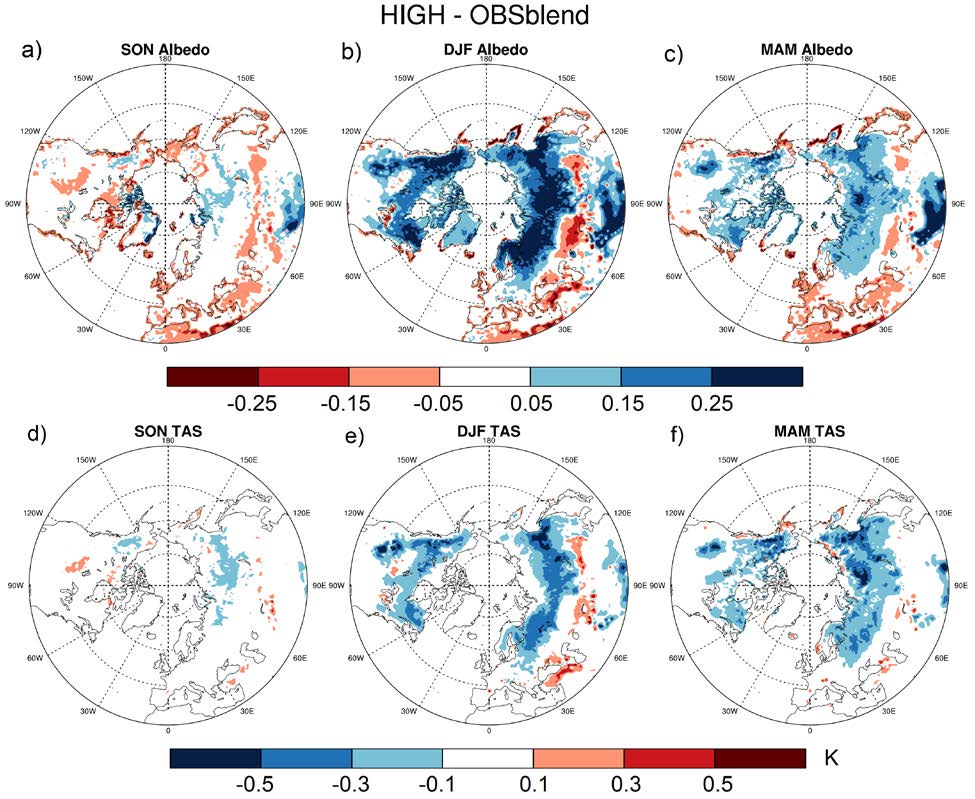
图 S1
Figure S1
相对于 OBSblend 试验，季节平均的（a、b、c）反照率和（d、e、f）近地面气温对 CLM-OFF HIGH 反照率强迫的响应。
Response to CLM-OFF HIGH albedo forcing in seasonal mean (a, b, c) albedo, (d, e, f) near-surface air temperature relative to the OBSblend experiment.
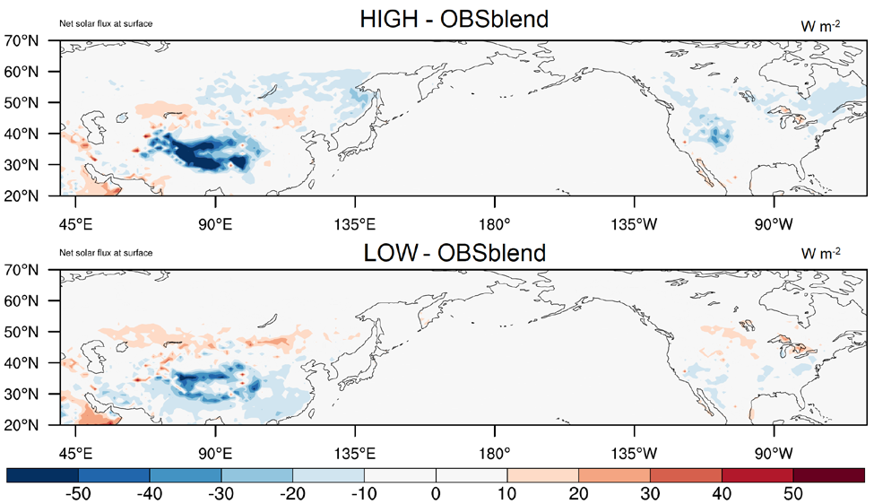
图 S2
Figure S2
相对于 OBSblend，HIGH（上）和 LOW（下）试验的冬季平均净短波辐射响应。
Mean winter net shortwave radiation response for the HIGH (top) and LOW (bottom) experiments relative to OBSblend.
尽管二者名称对照鲜明，但两个试验的冬季反照率强迫均以青藏高原大范围内的反照率大幅降低为主。
Despite their contrasting names, both experiments exhibit a winter albedo forcing that is dominated by large decreases across the Tibetan Plateau.
这与气候模式倾向于高估该区域积雪覆盖的情况一致（例如，Thackeray 等，2016 年，图 3）。
This is consistent with a tendency for climate models to overestimate snow cover across this region (e.g., Fig. 3 from Thackeray et al. 2016).
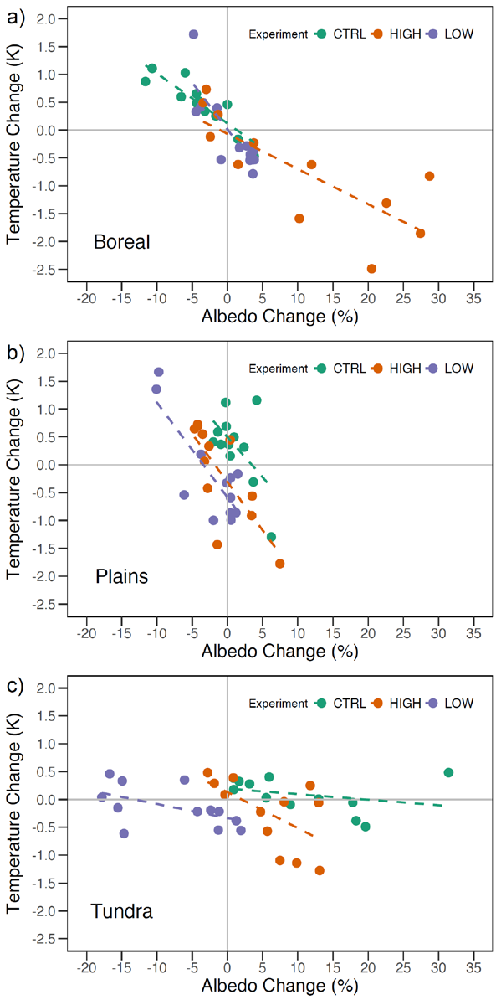
图 S3
Figure S3
三个试验（CTRL、HIGH、LOW）相对于 OBSblend 的反照率差异和温度差异的散点图。
Scatterplots of the albedo difference and temperature difference from three experiments (CTRL, HIGH, LOW) relative to OBSblend.
数据来自图 10，每个点表示单个月份的试验间差异。
Data are derived from Figure 10, with each point representing the difference between experiments for a single month.
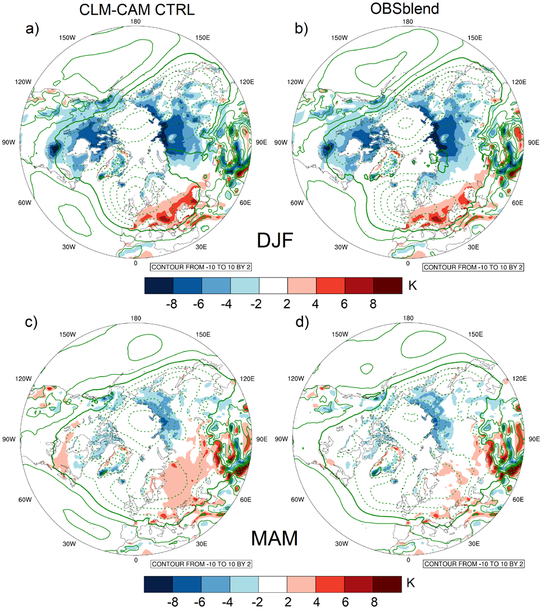
图 S4
Figure S4
（a、c）CLM-CAM CTRL 与（b、d）OBSblend 在（a、b）冬季和（c、d）春季的温度及海平面气压（SLP）偏差比较。
Comparison of the temperature and SLP biases in (a, c) CLM-CAM CTRL and (b, d) OBSblend during (a, b) winter and (c, d) spring.
这两个面板之间的差异见图 4a、b。
The difference between these two panels is shown in Fig. 4a, b.
北美和欧亚大陆北方地区的春季近地面气温偏差明显减小。
There is a noticeable reduction in spring near-surface air temperature bias across the boreal regions of North America and Eurasia.
另一方面，与原始偏差相比，海平面气压（SLP）的订正幅度总体较小。
On the other hand, corrections to SLP are generally small compared to the original bias.
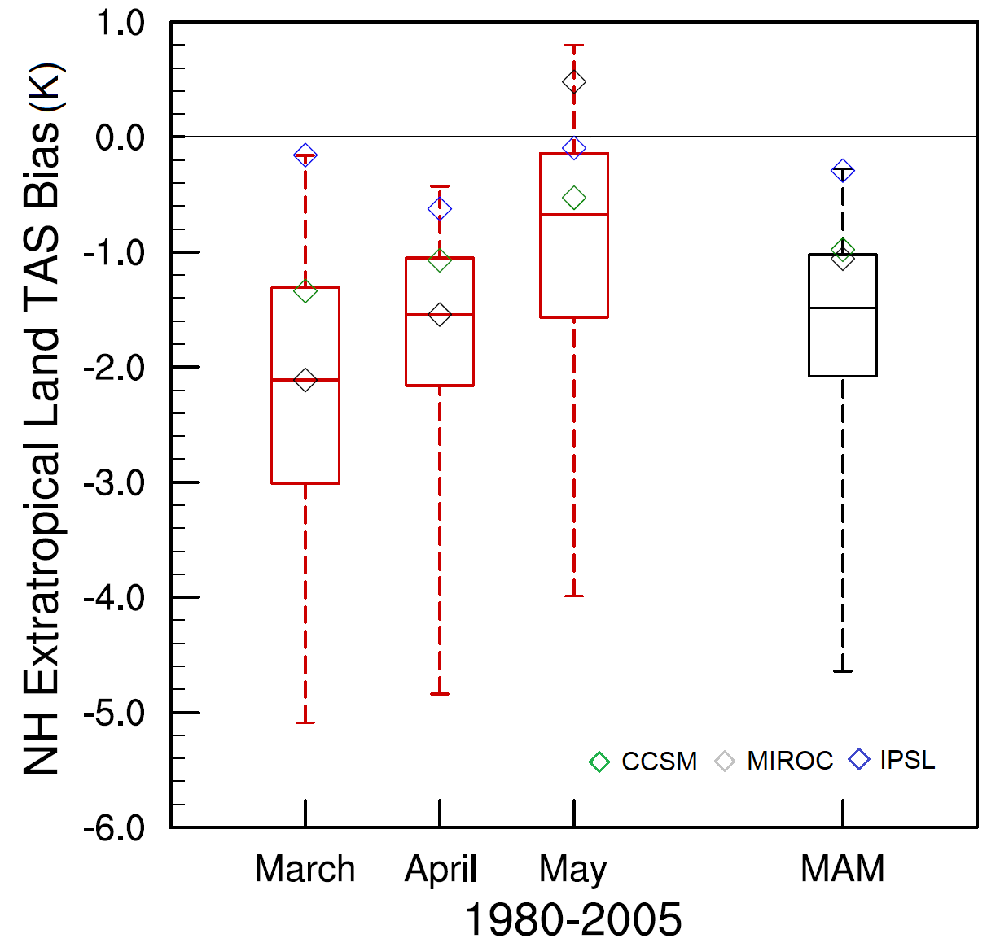
图 S5
Figure S5
CMIP5 集合在北半球热带外陆地上的气候态（1980—2005 年）近地面气温偏差箱线图。
Boxplot of climatological (1980-2005) near-surface air temperature bias from the CMIP5 ensemble over NH extratropical land.
本研究采用其反照率输出的模式（CCSM4、MIROC5、IPSL-CM5A-MR）在图中的位置以不同颜色的菱形突出显示。
The location of the models that we use albedo output from in this study (CCSM4, MIROC5, IPSL-CM5A-MR) are highlighted by different colored diamonds.
模式偏差是相对于由 NCEP（Kanamitsu 等，2002）和特拉华大学（Willmott 和 Matsuura，2001）数据集构建的混合观测量计算的。
Model bias is calculated with respect to a blended observational measure derived from the NCEP (Kanamitsu et al. 2002) and University of Delaware datasets (Willmott and Matsuura 2001).
文本 S1。
Text S1.
模式设置：
Model Setup:
此处我们记录为反照率扰动试验而对模式代码所作的修改。
Here we document the changes to model code that were made for the perturbed albedo experiments.
有必要提供比第 2.3 节更多的细节，因为反照率在整个代码中有多处实例，而修改其中不同的实例应会得到不同结果。
It is necessary to provide more details than given in Section 2.3 because there are several instances of albedo throughout the code, and the ones that are modified should give different results.
我们用于覆盖模式反照率计算的方法基于 interpMonthlyVeg 模块；CLM 使用该模块从文件中读取月平均 LAI 数据，并利用时间步信息根据相邻的月平均值插值得到逐日值。
Our approach for overriding the model calculation of albedo is based on the module interpMonthlyVeg, which is used by CLM to read in monthly LAI data from a file and use timestep information to interpolate daily values from the nearest monthly means.
插值后的逐日反照率变量（malb2t）也以相同方式计算。
An interpolated daily albedo variable (malb2t) is calculated in this same manner.
在 SurfaceAlbedoMod 的双流近似例程中，变量 ALBD（直射反照率）和 ALBI（漫射反照率）由 malb2t 覆盖，以扰动植被反射的辐射通量。
The variables ALBD (direct albedo) and ALBI (diffuse albedo) are overwritten (by malb2t) in the two-stream approximation routine of SurfaceAlbedoMod to perturb the flux reflected by vegetation.
此外，SurfaceAlbedo 例程中的非植被 PFTs 反照率也被覆盖。
Additionally, the albedo for non-vegetated PFTs is overwritten in the SurfaceAlbedo routine.
随后，在 SurfaceRadiationMod 中计算 FSA（地面吸收的太阳辐射）和 FSR（反射太阳辐射）时使用新的 ALBD 和 ALBI 值。
The new ALBD and ALBI values are then used in the calculation of FSA (solar radiation absorbed by the ground) and FSR (reflected solar radiation) in SurfaceRadiationMod.
由于难以从 CMIP5 输出中分离各辐射分量，直射辐射流和漫射辐射流被赋予相同的值。
Both the direct and diffuse streams are assigned the same values because of difficulty separating out radiation components from CMIP5 output.
出于类似原因，我们为可见光和近红外分量赋予相同的反照率值。
For similar reasons, we assign the same albedo values to the visible and near-infrared components.
还应注意，在少量因低质量反演结果被筛除而没有可用观测的网格单元上（Thackeray 等，2015），使用模式计算的反照率值。
It should also be noted that over grid cells where no observations are available (a small number of grid cells due to filtering of low quality retrievals; Thackeray et al., 2015), the model’s calculated albedo values are used.
此外，在这一设置中，反照率在日内不随时间变化。
Additionally, albedo does not vary throughout the day in this setup.
尽管指定的反照率随时间的演变比自然情况下更平滑（从一个月值线性过渡到下一个月值），但我们认为这不会影响长期气候，因为地表月平均辐射平衡保持不变。
Although the prescribed albedo evolves in a smoother nature (linearly from one monthly value to the next) than what would naturally occur, we do not believe this influences the long-term climate because the monthly mean radiation balance at the surface remains the same.
文本 S2。
Text S2.
北方森林试验：
Boreal Experiment:
另一个仅在北方森林区域指定 OBSblend 反照率（其他区域指定 CTRL 反照率）的试验显示，其区域温度响应与完整 OBSblend 试验非常相似（未显示）。
An additional experiment, where OBSblend albedo was prescribed only over the boreal forest (and CTRL albedo is prescribed elsewhere), reveals a very similar regional temperature response to the full OBSblend experiment (not shown).
有趣的是，该试验并未在太平洋或大西洋扇区产生相同的海平面气压（SLP）响应，从而进一步增强了青藏高原反照率强迫具有重要作用这一解释的可信度（在这一仅限北方森林的试验中，青藏高原反照率未受到扰动）。
Interestingly, this experiment does not produce the same SLP responses over the Pacific or Atlantic sectors, giving more credence to the important role of Tibetan Plateau albedo forcing (which is unperturbed in this boreal-only experiment).
该试验使我们能够评估反照率偏差的直接影响；这种偏差源于 CLM 中与冠层积雪相关的问题，而这些问题由 Thackeray 等（2014）识别。
This experiment allows us to evaluate the direct influence of the albedo bias stemming from issues associated with canopy snow in CLM identified by Thackeray et al. (2014).